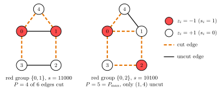
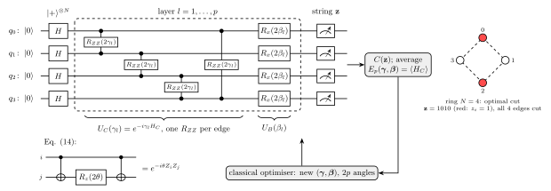
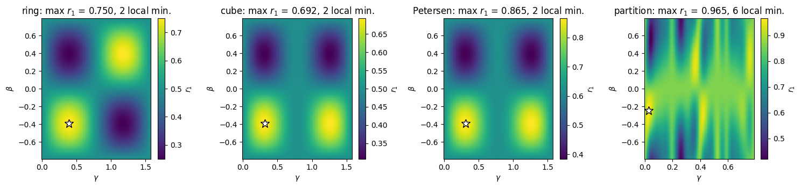
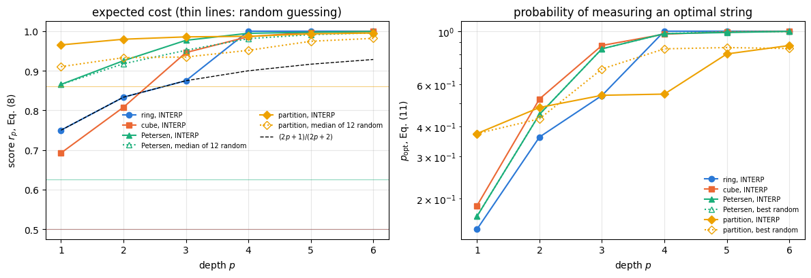
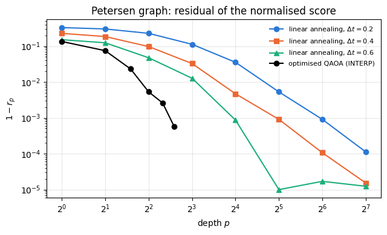
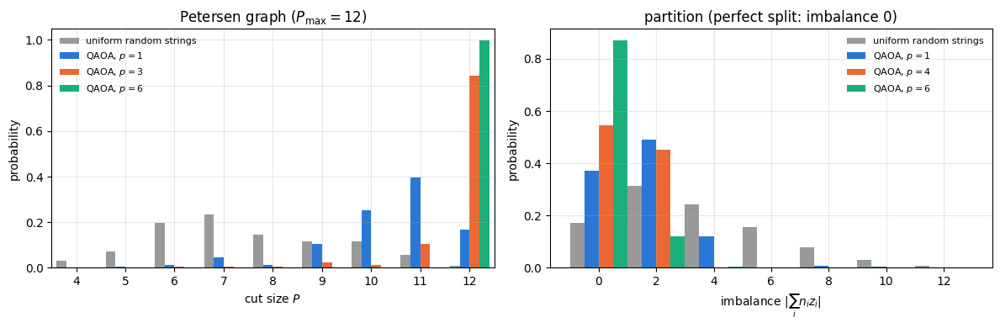

Many problems of logistics, scheduling and circuit design reduce to choosing \(N\) binary variables so that a cost function is as small as possible. Two examples run through this notebook. In MaxCut the vertices of a graph are split into two groups so that as many edges as possible join the two groups. In number partitioning a list of positive integers is split into two sublists whose sums are as close as possible. Both belong to the class of NP-hard problems: no algorithm is known that solves every instance in a time polynomial in \(N\), and every known exact method needs, in the worst case, a time that grows exponentially with \(N\); the plain one checks all \(2^N\) assignments.
The quantum approximate optimisation algorithm (QAOA), proposed by Farhi, Goldstone and Gutmann (2014), attacks such problems with a short parametrised circuit. The classical cost becomes a Hamiltonian \(H_C\) that is diagonal in the computational basis, so that its ground states are the optimal bit strings. A circuit of \(p\) layers alternates evolution under \(H_C\) with evolution under a “mixer” \(B=\sum_qX_q\), starting from the uniform superposition of all bit strings, and the \(2p\) evolution times are tuned by a classical optimiser to minimise \(\langle H_C\rangle\). The output is a quantum state, and measuring it gives bit strings; the algorithm is useful if good bit strings come out with high probability.
QAOA is the variational eigensolver of notebook 42 with three changes: the Hamiltonian is classical (diagonal), the ansatz is fixed by the problem, and the number of parameters, \(2p\), does not grow with \(N\). These changes make some things exact that were numerical in notebook 42: at \(p=1\) the expectation value of any unweighted MaxCut instance has a closed form, and the cost layer is a phase on every bit string, which a state-vector simulation applies by one element-wise multiplication.
1.1 Optimisation on a quantum computer
The problem. MaxCut is the main example of this notebook. Its input is a graph, a set of vertices joined by edges, and a solution is a split of the vertices into two groups; the size of the cut is the number of edges whose two ends lie in different groups, and we want the split with the largest cut. Section 3.2 works through a graph of five vertices by hand (Figure 1). Every vertex can go into either group, so a graph of \(N\) vertices has \(2^N\) splits, about \(10^3\) for \(N=10\) and \(10^{30}\) for \(N=100\). Checking them all quickly becomes impossible, and no method is known that finds the best cut of every graph in a time that grows only polynomially with \(N\). In practice, large instances are attacked with approximate methods, from simple heuristics such as the greedy search of Section 3.5 to more elaborate classical approximation algorithms, which return good cuts without a proof that they are the best ones. A quantum algorithm for MaxCut has to compete with them.
The approach with a quantum computer. QAOA follows a chain of five steps, each of which has its own section below.
Encode the bit strings in qubits. Vertex \(i\) becomes qubit \(i\), and the computational basis state \(\vert z_1\cdots z_N\rangle\) is one split of the graph.
Write the cost as a Hamiltonian. The cut size is a sum of two-spin terms, so it defines an Ising Hamiltonian \(H_C\) that is diagonal in the computational basis; its eigenvalue on a string decreases as the cut grows, so the best cut is the ground state of \(H_C\), and the optimisation problem becomes the problem of preparing that ground state.
Prepare a state that favours low-cost strings. The circuit starts from the uniform superposition of all \(2^N\) strings and applies \(p\) layers, each an evolution under \(H_C\) followed by an evolution under the mixer \(B=\sum_qX_q\), with \(2p\) angles \((\boldsymbol\gamma,\boldsymbol\beta)\).
Measure. A measurement in the computational basis returns one string; repeating the circuit gives a sample of cuts, and we keep the best one.
Tune the angles. A classical optimiser adjusts \((\boldsymbol\gamma,\boldsymbol\beta)\) to lower the average cost estimated from the measurements, and the loop returns to step 3. In the simulations of this notebook the average cost is computed exactly from the state vector.
Why this can work. The uniform superposition contains every string, but measuring it returns a uniformly random string, so an optimal one appears only with probability \(n_{\rm opt}/2^N\), where \(n_{\rm opt}\) is the number of optimal strings. Before the measurement the amplitudes have to be reshaped so that good strings carry most of the weight, and interference does the reshaping. The cost layer gives every string a phase proportional to its cost and changes no probability. The mixer then rotates every qubit, so the new amplitude of a string combines the old amplitudes of the strings obtained from it by flipping bits (for a small angle mostly a single bit), and whether these contributions add up or cancel depends on the phases they carry. With well-chosen angles the weight accumulates on low-cost strings.
A second picture explains why the alternating structure is a natural choice. In adiabatic quantum computation (Farhi, Goldstone, Gutmann and Sipser, 2000) the system starts in the ground state of \(-B\), which is the uniform superposition, and the Hamiltonian is changed slowly from \(-B\) to \(H_C\). If the change is slow enough compared with the smallest energy gap along the way, the state stays in the instantaneous ground state and ends in the ground level of \(H_C\), where a measurement returns an optimal string. Quantum annealing (Kadowaki and Nishimori, 1998) is the same idea seen as a quantum version of simulated annealing, with a transverse field that is lowered in time playing the part of the temperature. On a gate-based quantum computer the slow evolution is cut into many short steps that alternate evolutions under \(H_C\) and under \(B\). QAOA keeps this alternating structure but uses only a few steps and lets the optimiser choose their lengths; it is a short, trainable version of annealing, and Section 9 makes the connection precise.
What to expect. Most complexity theorists believe, although it has not been proven, that a quantum computer cannot solve every instance of an NP-hard problem in polynomial time. The realistic hope is that QAOA finds better cuts than classical heuristics, or finds them faster, on some instances of useful size, and whether it does is an open research question. The algorithm is designed for noisy intermediate-scale quantum (NISQ) devices, the name Preskill (2018) gave to processors with about 50 to 100 qubits and no error correction, whose gate errors limit the size of the circuits that can be run reliably. Shallow circuits come with a limitation of their own. At depth \(p\) the expectation value of an edge depends only on the vertices within distance \(p\) of it (the light cone of Section 5.1), and Bravyi, Kliesch, Koenig and Tang (2020) used this locality, together with the spin-flip symmetry of Section 4.3, to prove that on certain MaxCut instances a classical algorithm outperforms QAOA at every fixed depth. Experiments have run the algorithm on real hardware. Harrigan et al. (2021) applied QAOA on up to 23 superconducting qubits of the Sycamore processor. For problems whose graph matched the connectivity of the chip, the approximation ratio (Section 3.2) did not depend on the problem size and improved with depth. For MaxCut and the Sherrington–Kirkpatrick spin glass (random couplings between all pairs of spins), whose interactions had to be routed across the chip, the performance decreased with the problem size but stayed better than random guessing.
1.2 Road map
The chain of Section 1.1 maps onto the notebook as follows: the problem and steps 1–2 in Section 3, the circuit of step 3 in Sections 4–6, the optimisation of step 5 in Sections 7–8, the annealing picture in Section 9, and the measurement of step 4, compared with a random cut and with greedy search, in Section 11.
Section 3 writes binary optimisation problems as Ising Hamiltonians: the substitution from bits to spins, MaxCut, number partitioning, and the four instances used throughout, solved by enumeration together with two classical baselines.
Section 4 builds the QAOA state, implements the cost layer as a phase and checks it against a gate-by-gate circuit, and derives the symmetries that make the landscape periodic.
Section 5 derives the depth-one expectation value for any unweighted graph in the Heisenberg picture, checks it against simulation (including a graph with triangles, where a simpler formula fails), and finds the optimal angles on regular graphs.
Section 6 draws the depth-one landscapes of the four instances.
Section 7 computes gradients by automatic differentiation and by the parameter-shift rule, and shows why the two-term rule applied to a whole layer gives wrong numbers.
Section 8 optimises circuits up to \(p=6\), comparing random restarts with interpolation from depth \(p\) to \(p+1\), and records the approximation ratio and the probability of sampling an optimal bit string.
Section 9 connects QAOA with Trotterised quantum annealing, Section 10 transfers optimal angles from one graph to others, Section 11 samples bit strings and compares with classical baselines, and Section 12 measures the cost of the simulation.
What you will learn
Physics
how a binary optimisation problem becomes an Ising Hamiltonian whose ground states are the solutions;
the QAOA circuit as a sequence of alternating evolutions, its connection with adiabatic quantum computing, and the light cone that limits what a shallow circuit can see;
the difference between a low expected cost and a high probability of measuring the optimal bit string.
Numerical methods
the depth-one expectation value in closed form and its use as a check of the simulation;
parameter-shift rules for parameters that feed many gates, and the Fourier content of the landscape that decides how many evaluations an exact derivative needs;
initialisation strategies for multi-parameter optimisation, and statistics over random restarts.
Implementation practice
a diagonal operator stored as a tensor of \(2^N\) numbers and applied as an element-wise phase;
one compiled training loop (lax.scan) vmapped over random initial angles;
wrong controls: a formula that must fail on a graph with triangles, a parameter-shift rule that must fail on a layer, an annealing schedule with the wrong sign.
Every notebook of this course starts with the same cell. Choose where to run (DEVICE) and the floating-point precision (PRECISION): "double" = float64/complex128 (default, recommended for physics), "single" = float32/complex64 (half the memory, faster on consumer GPUs, but watch the round-off). All code below derives its dtypes from RDTYPE/CDTYPE and its check tolerances from TOL, so nothing else needs to change.
Code
# ==============================================================================# CONFIGURATION -- adapt to your hardware, then run the notebook top to bottom# ==============================================================================DEVICE ="auto"# "auto": use a GPU if JAX finds one, else CPU | "cpu" | "gpu"PRECISION ="double"# "double": float64/complex128 | "single": float32/complex64import osif DEVICE =="cpu": os.environ["JAX_PLATFORMS"] ="cpu"# must be set BEFORE jax is importedimport stringfrom functools import partialimport mathimport numpy as npimport jaximport jax.numpy as jnpfrom jax import lax# Precision is configurable: "double" = float64/complex128 (default; needed for long time evolutions and# tight validation), "single" = float32/complex64 (half the memory, faster on consumer GPUs).# In a notebook PRECISION is defined in the Configuration cell; for this module use the env var QE_PRECISION.PRECISION =globals().get("PRECISION", os.environ.get("QE_PRECISION", "double"))jax.config.update("jax_enable_x64", PRECISION =="double")RDTYPE = jnp.float64 if PRECISION =="double"else jnp.float32 # real dtypeCDTYPE = jnp.complex128 if PRECISION =="double"else jnp.complex64 # complex dtype of all states/operatorsTOL =1e-10if PRECISION =="double"else1e-4# tolerance for sanity checks (asserts)_LETTERS = string.ascii_letters # the 52 einsum index labels a-z, A-Zimport timeimport matplotlib.pyplot as pltif DEVICE =="gpu"and jax.default_backend() =="cpu":print("WARNING: DEVICE='gpu' requested but JAX found no GPU -- running on CPU.")print(f"JAX {jax.__version__} | backend: {jax.default_backend()} | devices: {jax.devices()}")print(f"precision: {PRECISION} -> real {RDTYPE.__name__}, complex {CDTYPE.__name__}, check tolerance TOL={TOL:g}")
JAX 0.11.0 | backend: cpu | devices: [CpuDevice(id=0)]
precision: double -> real float64, complex complex128, check tolerance TOL=1e-10
2. Engine recap and notebook helpers
From the engine we take the gate application, the single-qubit and two-qubit rotations, product states, the Hamiltonian machinery used for validation (heisenberg_terms, apply_hamiltonian, dense_hamiltonian), the bit-string sampler, the parameter-shift gradient and Adam. The helper cell adds plot settings and two timing functions that separate compilation from execution.
Engine recap — the simulator primitives used in this notebook (click to expand)
# ==============================================================================# ENGINE RECAP: the functions of quantum_engine.py (SmoQ.jax) used in this notebook.# Each one is derived, with its mathematics and an independent check, in notebook 08b# (Chapter 3), 'Building the quantum simulator engine'.# States are rank-N tensors of shape (2,)*N; every operator acts through ONE einsum.# ==============================================================================# ----------------------------------------------------------------------------# 1. Elementary matrices: Paulis, Clifford generators, rotations# ----------------------------------------------------------------------------I2 = jnp.eye(2, dtype=CDTYPE)X = jnp.array([[0, 1], [1, 0]], dtype=CDTYPE)Y = jnp.array([[0, -1j], [1j, 0]], dtype=CDTYPE)Z = jnp.array([[1, 0], [0, -1]], dtype=CDTYPE)H = jnp.array([[1, 1], [1, -1]], dtype=CDTYPE) / jnp.sqrt(2.0) # Hadamard: Z-basis <-> X-basisS = jnp.array([[1, 0], [0, 1j]], dtype=CDTYPE) # phase gate, S^2 = ZSDG = S.conj().TCNOT = jnp.array([[1, 0, 0, 0], [0, 1, 0, 0], [0, 0, 0, 1], [0, 0, 1, 0]], dtype=CDTYPE)XX = jnp.kron(X, X)YY = jnp.kron(Y, Y)ZZ = jnp.kron(Z, Z)def rx(theta):"""Rotation about x: Rx(theta) = exp(-i theta X/2) = cos(theta/2) 1 - i sin(theta/2) X. Derivation: for any operator with P^2 = 1 the exponential series splits into even/odd parts, exp(-i a P) = cos(a) 1 - i sin(a) P. Here a = theta/2. `theta` may be a traced JAX scalar, so the gate is differentiable (jax.grad) and jit-able. """ c, s = jnp.cos(theta /2), jnp.sin(theta /2)return jnp.array([[c, -1j* s], [-1j* s, c]], dtype=CDTYPE)def rz(theta):"""Rotation about z: Rz(theta) = exp(-i theta Z/2) = diag(e^{-i theta/2}, e^{+i theta/2}).""" e = jnp.exp(-0.5j* theta)return jnp.array([[e, 0], [0, jnp.conj(e)]], dtype=CDTYPE)def rpp(theta, PP):"""Two-qubit Pauli rotation exp(-i theta PP/2) for any product PP of two Pauli matrices (XX, YY, ZZ, XY, ...). Because (P x Q)^2 = 1 the same closed form as for single-qubit rotations holds: exp(-i theta PP/2) = cos(theta/2) 1_4 - i sin(theta/2) PP. These are the native entangling gates of trapped ions (XX) and the building blocks of Trotterised spin-chain evolution. """return jnp.cos(theta /2) * jnp.eye(4, dtype=CDTYPE) -1j* jnp.sin(theta /2) * PPdef rzz(theta):"""exp(-i theta Z(x)Z / 2) -- diagonal: diag(e^{-i t/2}, e^{+i t/2}, e^{+i t/2}, e^{-i t/2})."""return rpp(theta, ZZ)# ----------------------------------------------------------------------------# 2. THE core primitive: a k-qubit operator acting on a tensor through ONE einsum# ----------------------------------------------------------------------------def apply_gate(psi, U, qubits):"""Apply a k-qubit operator U to the axes `qubits` of the tensor `psi`. MATH ---- One qubit (k=1), target q: psi'[s_0,..,a,..,s_{N-1}] = sum_b U[a,b] psi[s_0,..,b,..,s_{N-1}] Two qubits (k=2), targets (q1,q2); the 4x4 matrix is reshaped to U[a1,a2,b1,b2]: psi'[.., a1, .., a2, ..] = sum_{b1,b2} U[a1,a2,b1,b2] psi[.., b1, .., b2, ..] This IS the action of (1 x .. x U x .. x 1) -- written without ever building it. EINSUM TRANSLATION (generated automatically below) ------------------ N=3, q=1 : "db,abc->adc" d = new (output) index of qubit 1 N=4, q=(1,3) : "efbd,abcd->aecf" e,f = new indices of qubits 1 and 3 Recipe: label the axes of psi with letters a,b,c,...; give every target qubit a NEW letter (the next unused ones); U carries (new letters)+(old letters of the targets); the output is psi's labels with the target letters replaced by the new ones. IMPLEMENTATION NOTES -------------------- * reshape of U: (2^k,2^k) -> (2,)*2k. Row index = (a1..ak), column = (b1..bk), and the FIRST qubit in `qubits` is the most significant bit of the small matrix, i.e. it corresponds to the LEFT factor of kron(A,B). * `qubits` may be any distinct axes in any order: non-neighbouring gates cost the same. * U need not be unitary: projectors, Kraus operators and Hamiltonian terms reuse this. * psi may be ANY tensor with those axes of size 2: a state (rank N), a density tensor (rank 2N: ket axes 0..N-1, bra axes N..2N-1), ... COST O(2^k * 2^N) operations, O(2^N) memory (dense matrix: O(4^N) both). JAX `qubits` must be static Python ints (they define the einsum string); psi and U are traced, so the function can sit inside jit / grad / vmap / scan. """ qubits =tuple(int(q) for q in qubits) k, n =len(qubits), psi.ndim U = jnp.asarray(U, dtype=psi.dtype).reshape((2,) * (2* k)) # matrix -> rank-2k tensor inp =list(_LETTERS[:n]) # labels of psi's axes new = _LETTERS[n:n + k] # fresh labels for the outputs out = inp.copy()for a, q inzip(new, qubits): out[q] = a # target axes get the new labels sub =f"{''.join(new)}{''.join(inp[q] for q in qubits)},{''.join(inp)}->{''.join(out)}"return jnp.einsum(sub, U, psi)# ----------------------------------------------------------------------------# 3. State preparation# ----------------------------------------------------------------------------_KETS = {"0": [1, 0], "1": [0, 1], "+": [1, 1], "-": [1, -1], "r": [1, 1j], "l": [1, -1j]}def product_state(spec):"""Product state from a string, one character per qubit: product_state('01+-') = |0>|1>|+>|->. ('r','l' = the +1/-1 eigenstates of Y.) MATH psi[s_0,...,s_{N-1}] = v0[s_0] v1[s_1] ... v_{N-1}[s_{N-1}] EINSUM an outer product = einsum with NO summed index: "a,b,c->abc". A product state needs only 2N numbers; entanglement is what makes all 2^N necessary. """ vecs = [jnp.array(_KETS[c], dtype=CDTYPE) / jnp.linalg.norm(jnp.array(_KETS[c], dtype=CDTYPE))for c in spec] n =len(vecs) sub =",".join(_LETTERS[i] for i inrange(n)) +"->"+ _LETTERS[:n]return jnp.einsum(sub, *vecs)# ----------------------------------------------------------------------------# 6. Measurements (Born rule, collapse, sampling)# ----------------------------------------------------------------------------_BASIS_ROT = {"Z": I2, "X": H, "Y": H @ SDG} # U maps the eigenbasis of the Pauli to |0>,|1>: P = U^dag Z Udef sample_bitstrings(key, psi, shots, bases=None):"""Sample `shots` outcomes of measuring ALL qubits (no collapse bookkeeping needed). MATH p(s) = |psi[s]|^2 ; optional per-qubit bases string like 'XZY' rotates first. IMPLEMENTATION `jax.random.categorical` draws flat indices from log-probabilities; the bits are unpacked with shifts: s_q = (i >> (N-1-q)) & 1 (qubit 0 = most significant bit). Returns an int array of shape (shots, N). """ N = psi.ndimif bases isnotNone:for q, b inenumerate(bases): psi = apply_gate(psi, _BASIS_ROT[b], [q]) logp = jnp.log(jnp.clip(jnp.abs(psi.reshape(-1)) **2, 1e-300, None)) idx = jax.random.categorical(key, logp, shape=(shots,))return (idx[:, None] >> jnp.arange(N -1, -1, -1)[None, :]) &1# ----------------------------------------------------------------------------# 8. Hamiltonians as lists of local terms; H|psi> matrix-free# ----------------------------------------------------------------------------def heisenberg_terms(N, Jxx=1.0, Jyy=1.0, Jzz=1.0, hx=0.0, hy=0.0, hz=0.0, periodic=False, bonds=None):"""Spin-1/2 Hamiltonian in Pauli convention H = sum_<ij> (Jxx X_i X_j + Jyy Y_i Y_j + Jzz Z_i Z_j) + sum_i (hx X_i + hy Y_i + hz Z_i) returned as a LIST of local terms [(qubits, small_matrix), ...] -- this list *is* our Hamiltonian. Heisenberg: Jxx=Jyy=Jzz XXZ: Jxx=Jyy!=Jzz XY: Jzz=0 TFIM: only Jzz and hx. `bonds` overrides the default open chain (any graph: ladders, 2D lattices, all-to-all, ...)."""if bonds isNone: bonds = [(i, i +1) for i inrange(N -1)] + ([(N -1, 0)] if periodic and N >2else []) terms = [((i, j), Jxx * XX + Jyy * YY + Jzz * ZZ) for (i, j) in bonds]if hx !=0or hy !=0or hz !=0: terms += [((i,), hx * X + hy * Y + hz * Z) for i inrange(N)]return termsdef apply_hamiltonian(terms, psi):"""H|psi> = sum_k h_k|psi>, every term applied with `apply_gate` (h_k is Hermitian, not unitary -- the einsum does not care). Cost O(#terms * 2^N). This matrix-vector product is ALL that Lanczos, Chebyshev and Krylov methods need, which is why they scale to N ~ 25-30.""" out = jnp.zeros_like(psi)for qubits, h in terms: out = out + apply_gate(psi, h, qubits)return outdef dense_hamiltonian(terms, N):"""Dense 2^N x 2^N matrix for VALIDATION on small N -- built from the matrix-free action: column j of H is H|e_j>. `jax.vmap` applies H to all basis vectors at once.""" eye = jnp.eye(2** N, dtype=CDTYPE).reshape((2** N,) + (2,) * N) cols = jax.vmap(lambda e: apply_hamiltonian(terms, e).reshape(-1))(eye)return cols.T# ----------------------------------------------------------------------------# 15. Variational circuits: ansatz, gradients, optimizers# ----------------------------------------------------------------------------def parameter_shift_grad(f, theta, shift=jnp.pi /2):"""Parameter-shift rule: for gates exp(-i theta_k P/2) with P^2 = 1 the cost is a sinusoid in theta_k, f = a + b cos(theta_k) + c sin(theta_k), so for any shift s with sin(s) != 0 d f / d theta_k = [ f(theta + s e_k) - f(theta - s e_k) ] / (2 sin s) (EXACT, not finite differences) and the default s = pi/2 gives the familiar [ f(+pi/2) - f(-pi/2) ] / 2. -- the gradient a real quantum computer can measure: 2 circuit evaluations per parameter. JAX: vmap over the unit vectors e_k evaluates all shifted circuits in one batched call.""" eye = jnp.eye(theta.size).reshape((theta.size,) + theta.shape) denom =2* jnp.sin(shift)return jax.vmap(lambda e: (f(theta + shift * e) - f(theta - shift * e)) / denom)(eye).reshape(theta.shape)def adam_init(theta):"""Adam state: (first moment m, second moment v, step counter t)."""return (jnp.zeros_like(theta), jnp.zeros_like(theta), 0)def adam_update(theta, g, state, lr=0.05, b1=0.9, b2=0.999, eps=1e-8):"""One Adam step (Kingma & Ba): m <- b1 m + (1-b1) g, v <- b2 v + (1-b2) g^2, theta <- theta - lr * m_hat / (sqrt(v_hat) + eps), hats = bias-corrected moments. Momentum (m) averages noisy gradients (great with SPSA); v gives a per-parameter step size.""" m, v, t = state t = t +1 m = b1 * m + (1- b1) * g v = b2 * v + (1- b2) * g **2 theta = theta - lr * (m / (1- b1 ** t)) / (jnp.sqrt(v / (1- b2 ** t)) + eps)return theta, (m, v, t)
Code
# ==============================================================================# PLOT STYLE + small helpers# ==============================================================================import itertoolsPALETTE = ["#2a78d6", "#eb6834", "#1baf7a", "#eda100", "#e87ba4", "#4a3aa7"] # colour-blind-friendly, fixed orderMARKERS = ["o", "s", "^", "D", "v", "P"]plt.rcParams.update({"axes.prop_cycle": plt.cycler(color=PALETTE), "axes.grid": True,"grid.alpha": 0.3, "font.size": 10, "legend.frameon": False})def max_abs(a):"""Largest absolute entry of an array, as a Python float."""returnfloat(jnp.max(jnp.abs(jnp.asarray(a))))def compile_timed(fn, *args):"""Compile `jax.jit(fn)` ahead of time for these argument shapes (notebook 44). JAX `jit(fn).lower(*args).compile()` traces and compiles WITHOUT executing; calling the returned object is then pure run time. Returns (compiled function, compile seconds). """ t0 = time.perf_counter() compiled = jax.jit(fn).lower(*args).compile()return compiled, time.perf_counter() - t0def run_timed(compiled, *args, repeats=5):"""Run an already compiled function `repeats` times; returns (output, median run seconds).""" times = []for _ inrange(repeats): t0 = time.perf_counter() out = jax.block_until_ready(compiled(*args)) times.append(time.perf_counter() - t0)return out, float(np.median(times))
3. Binary optimisation as a diagonal Ising Hamiltonian
3.1 Quadratic unconstrained binary optimisation
Let \(\mathbf s=(s_1,\dots,s_N)\) with \(s_i\in\{0,1\}\), and let \(W\) be a real upper-triangular \(N\times N\) matrix. The quadratic unconstrained binary optimisation (QUBO) problem asks for the minimum of
Because \(s_i^2=s_i\), a quadratic self-term \(W_{ii}s_i^2\) is already linear, so Eq. (1) is the most general quadratic function of binary variables. The word “unconstrained” means that every one of the \(2^N\) strings is allowed; a constraint is usually built in by adding a penalty term that makes forbidden strings expensive. Lucas (2014) gives such formulations for many NP-hard problems, number partitioning among them. A constraint can also be kept exactly by a mixer that never leaves the allowed strings, the route of the quantum alternating operator ansatz (Hadfield et al., 2019); the two problems of this notebook are unconstrained and need neither.
A qubit register stores Ising spins more naturally than bits. The substitution
maps \(s_i=0\) to \(z_i=+1\) (the qubit state \(\vert0\rangle\), the \(+1\) eigenstate of \(Z\)) and \(s_i=1\) to \(z_i=-1\). Inserting it into the two kinds of terms of Eq. (1),
The field \(h_i\) collects \(-W_{ij}/4\) from every pair that contains \(i\), whichever of the two indices is smaller. Replacing each \(z_i\) by the Pauli operator \(Z_i\) gives the cost Hamiltonian
Every operator in \(H_C\) is a product of \(Z\)’s, so \(H_C\) is diagonal in the computational basis: each basis state \(\vert\mathbf z\rangle=\vert z_1\cdots z_N\rangle\) is an eigenstate with the classical cost as eigenvalue (the constant \(C_0\) shifts all eigenvalues equally; from here on we drop it and write \(C(\mathbf z)\) for the eigenvalue of \(H_C\)). The ground states of \(H_C\) are the optimal strings; if several strings share the minimum, the ground level is degenerate.
The first cell implements Eq. (3) and checks it on a random \(6\times6\) upper-triangular \(W\) by evaluating both sides on all 64 strings.
Code
# ==============================================================================# STEP 1: QUBO -> Ising, checked on every bit string of a random instance# ==============================================================================def qubo_to_ising(W):"""Ising form of the QUBO cost C(s) = sum_i W_ii s_i + sum_{i<j} W_ij s_i s_j with s = (1 - z)/2, Eq. (3). MATH C0 = sum_i W_ii / 2 + sum_{i<j} W_ij / 4 J_ij = W_ij / 4 (i < j) h_i = -W_ii / 2 - sum_{j != i} W_{min(i,j), max(i,j)} / 4 Returns (C0, J as a dict {(i, j): J_ij}, h as an array of length N). """ W = np.asarray(W, dtype=float) N = W.shape[0] upper = np.triu(W, 1) C0 =0.5* np.trace(W) +0.25* upper.sum() J = {(i, j): 0.25* upper[i, j] for i inrange(N) for j inrange(i +1, N) if upper[i, j] !=0} h =-0.5* np.diag(W) -0.25* (upper.sum(axis=1) + upper.sum(axis=0)) # row i: pairs (i, j>i); column i: (j<i, i)return C0, J, hrng = np.random.default_rng(0)W_test = np.triu(rng.normal(size=(6, 6)))C0, J_test, h_test = qubo_to_ising(W_test)err_qubo =0.0for s in itertools.product([0, 1], repeat=6): s = np.array(s) z =1-2* s c_bits = W_test.diagonal() @ s +sum(W_test[i, j] * s[i] * s[j] for i inrange(6) for j inrange(i +1, 6)) c_spins = C0 + h_test @ z +sum(Jij * z[i] * z[j] for (i, j), Jij in J_test.items()) err_qubo =max(err_qubo, abs(c_bits - c_spins))print(f"max |C(s) - C(z)| over all 64 strings: {err_qubo:.2e}")assert err_qubo <1e-12
max |C(s) - C(z)| over all 64 strings: 8.88e-16
The two forms agree on every string to round-off, so Eq. (3) is correct, including the field term that collects pairs on both sides of the diagonal.
3.2 MaxCut
MaxCut asks for the split of a graph into two groups that separates as many connected pairs as possible. Problems of this shape appear in many places. When the edge weights measure how dissimilar two items are, a maximum cut puts the most dissimilar pairs into different groups, a simple form of clustering. Barahona, Grötschel, Jünger and Reinelt (1988) reduced two applied problems to MaxCut: finding the ground states of Ising spin glasses in an external field, a question of statistical physics, and minimising the number of vias (contacts between layers) in the layout of printed circuit boards and integrated circuits. The connection with spin glasses is direct, because the cut size is a sum of Ising couplings, as Eq. (6) below shows.
Let \(G=(V,E)\) be a graph with \(N\) vertices and edge set \(E\). A cut is a split of \(V\) into two groups, encoded by \(z_i=+1\) for one group and \(z_i=-1\) for the other. The edge \((i,j)\) is cut when \(z_i\neq z_j\), that is when \((1-z_iz_j)/2=1\). The size of the cut is
with \(J_{ij}=1\) on every edge and no fields. Each eigenvalue of \(H_C\) is \(\vert E\vert-2P\), an integer with the same parity as \(\vert E\vert\). A bipartite graph (one whose vertices split into two groups with all edges between the groups) has \(P_{\max}=\vert E\vert\); a graph with an odd cycle cannot cut all edges of that cycle.
A worked example. The “house” graph has \(N=5\) vertices: a square \(0-1-2-3-0\) and a roof vertex \(4\) joined to \(0\) and \(1\), so that \(0,1,4\) form a triangle. Its \(\vert E\vert=6\) edges are \((0,1),(1,2),(2,3),(0,3),(0,4),(1,4)\). We call the vertices with \(z_i=-1\) (bit \(s_i=1\), Eq. (2)) the red group and the others the white group, and write a split as the bit string \(s_0s_1s_2s_3s_4\). Counting the edges with ends of different colours gives, for a few splits,
red group
bit string
cut edges
\(P\)
none
00000
none
0
\(\{4\}\)
00001
\((0,4),(1,4)\)
2
\(\{0\}\)
10000
\((0,1),(0,3),(0,4)\)
3
\(\{0,1\}\)
11000
\((1,2),(0,3),(0,4),(1,4)\)
4
\(\{0,2\}\)
10100
\((0,1),(1,2),(2,3),(0,3),(0,4)\)
5
\(\{0,2,4\}\)
10101
\((0,1),(1,2),(2,3),(0,3),(1,4)\)
5
Five is the largest possible value, and the triangle explains why. Going round any cycle of the graph we return to the group we started from, so the group changes an even number of times: every cycle contains an even number of cut edges. The triangle \(0-1-4\) has three edges, so at most two of them are cut, at least one edge of the graph stays uncut, and \(P\leq5\). The splits \(\{0,2\}\) and \(\{0,2,4\}\) reach this bound, so \(P_{\max}=5\). In both, the square is cut completely (vertices \(0,2\) in one group, \(1,3\) in the other), and the roof vertex can join either group, because it is attached to one vertex of each. Together with their mirror images, obtained by exchanging the colours, these are four optimal strings. Figure 1 shows the split \(\{0,1\}\) and the optimal split \(\{0,2\}\).

Figure 1. Two cuts of the house graph. Red vertices have \(z_i=-1\) (bit \(s_i=1\)), white vertices \(z_i=+1\); cut edges are drawn dashed in orange, uncut edges solid in black. Left: \(s=11000\), \(P=4\). Right: \(s=10100\), \(P=5=P_{\max}\). The triangle \(0-1-4\) always keeps at least one uncut edge.
The approximation ratio. An algorithm that returns the split \(\mathbf z\) achieves the approximation ratio \(P(\mathbf z)/P_{\max}\), a number between 0 and 1. When the output is random, as for a measured quantum state, the figure of merit is the expected ratio \(\langle P\rangle/P_{\max}\); Section 3.5 writes it in terms of the eigenvalues of \(H_C\), Eq. (8), and extends it to number partitioning. The simplest benchmark is a random cut. Each edge is cut with probability \(1/2\), so \(\langle P\rangle=\vert E\vert/2\), and since \(P_{\max}\leq\vert E\vert\) a random cut has an expected ratio of at least \(1/2\) on every graph; on the house graph it is \(3/5\). The cell enumerates all \(2^5=32\) splits, reproduces the table, and counts how many strings have each cut size.
Code
# ==============================================================================# STEP 1b: the house graph, every cut counted by hand# ==============================================================================HOUSE_EDGES = [(0, 1), (1, 2), (2, 3), (0, 3), (0, 4), (1, 4)] # square 0-1-2-3 + roof vertex 4 on edge (0, 1)def cut_size(bits, edges):"""Cut size P of a split given as bits s_i (s_i = 1: red group, z_i = -1), Eq. (5). MATH P = sum_{(i,j) in E} (1 - z_i z_j) / 2, z_i = 1 - 2 s_i (= number of edges with s_i != s_j) """ z =1-2* np.asarray(bits)returnint(sum((1- z[i] * z[j]) //2for i, j in edges))all_bits =list(itertools.product([0, 1], repeat=5))P_house = {"".join(map(str, s)): cut_size(s, HOUSE_EDGES) for s in all_bits}print(f"bit string {'cut edges':42s} P")for s in ["00000", "00001", "10000", "11000", "10100", "10101"]: cut = [e for e in HOUSE_EDGES if s[e[0]] != s[e[1]]] # count the edges directlyprint(f" {s}{str(cut):42s}{P_house[s]}")assertlen(cut) == P_house[s]P_max_house =max(P_house.values())optimal_house =sorted(s for s, P in P_house.items() if P == P_max_house)hist = np.bincount(list(P_house.values()), minlength=len(HOUSE_EDGES) +1)print(f"P_max = {P_max_house}, reached by {len(optimal_house)} strings: {optimal_house}")print("number of strings with cut size P = 0..6:", hist.tolist())print(f"random cut: <P> = {np.mean(list(P_house.values())):.3f}, expected ratio <P>/P_max = "f"{np.mean(list(P_house.values())) / P_max_house:.3f}")assert P_max_house ==5and optimal_house == ["01010", "01011", "10100", "10101"]assert [P_house[s] for s in ["00000", "00001", "10000", "11000", "10100", "10101"]] == [0, 2, 3, 4, 5, 5]assertabs(np.mean(list(P_house.values())) -len(HOUSE_EDGES) /2) <1e-12# <P> = |E| / 2assertall(cut_size(s, [(0, 1), (1, 4), (0, 4)]) <=2for s in all_bits) # the triangle never has 3 cut edges
Enumeration confirms the hand count: \(P_{\max}=5\), reached by exactly the four strings found above. The 32 strings are distributed over the cut sizes \(0,\dots,6\) as \(2,0,8,12,6,4,0\). No string cuts all six edges, as the triangle argument requires, and no string has \(P=1\), because a split that cuts any edge of a cycle cuts at least two edges of it, and every edge of the house graph lies on a cycle. The mean cut of a random split is \(3=\vert E\vert/2\), so random guessing achieves the expected ratio \(3/5\), and it hits an optimal string with probability \(4/32\).
3.3 Number partitioning
Given positive integers \(n_1,\dots,n_N\), put \(z_i=+1\) for the numbers in the first sublist and \(z_i=-1\) for the second. The difference of the two sums is \(\sum_in_iz_i\), and its square is
using \(z_i^2=1\). Dropping the constant, \(H_C=\sum_{i<j}J_{ij}Z_iZ_j\) with \(J_{ij}=2n_in_j\) on every pair: the interaction graph is complete, and the couplings are non-uniform. A perfect partition has \(C_{\rm NP}=0\), i.e. \(H_C=-\sum_in_i^2\).
3.4 The instances, and the cost as a tensor of \(2^N\) numbers
We use four instances, all with \(N\le10\):
name
\(N\)
graph
\(\vert E\vert\)
property
ring
8
cycle \(0-1-\cdots-7-0\)
8
bipartite, 2-regular
cube
8
the cube \(Q_3\)
12
bipartite, 3-regular, no triangles
Petersen
10
outer 5-cycle and inner pentagram joined by 5 spokes
A fifth graph, the triangular prism (\(N=6\), two triangles joined by three edges), appears only in Section 5 as a test case with triangles.
Because \(H_C\) is diagonal, the whole operator is its diagonal: one number \(C(\mathbf z)\) per string. We store it as a rank-\(N\) tensor of shape \((2,)^N\), the same layout as a state, built by broadcasting. Let \(z^{(q)}\) be the array \((+1,-1)\) placed on axis \(q\) (shape \((1,\dots,2,\dots,1)\)); then
is a sum of broadcast products, and \(H_C\vert\psi\rangle\) is diag * psi. The cell checks the diagonal against the engine’s matrix-free Hamiltonian (apply_hamiltonian on a list of \(ZZ\) terms) and, for the 8-qubit cube, against the diagonal of the dense \(256\times256\) matrix.
Code
# ==============================================================================# STEP 2: the instances and the diagonal cost tensor# ==============================================================================def ring_edges(N):"""Edges of the cycle graph 0-1-...-(N-1)-0."""return [(i, (i +1) % N) for i inrange(N)]CUBE_EDGES = [(0, 1), (1, 2), (2, 3), (3, 0), (4, 5), (5, 6), (6, 7), (7, 4), (0, 4), (1, 5), (2, 6), (3, 7)]PETERSEN_EDGES = ([(i, (i +1) %5) for i inrange(5)] # outer pentagon+ [(5+ i, 5+ (i +2) %5) for i inrange(5)] # inner pentagram+ [(i, i +5) for i inrange(5)]) # spokesPRISM_EDGES = [(0, 1), (1, 2), (2, 0), (3, 4), (4, 5), (5, 3), (0, 3), (1, 4), (2, 5)]PARTITION_NUMBERS = np.array([2, 1, 2, 1, 2, 1, 2, 1])def maxcut_couplings(edges):"""MaxCut, Eq. (6): J_ij = 1 on every edge (keys sorted so that i < j)."""return {(min(i, j), max(i, j)): 1.0for i, j in edges}def partition_couplings(n):"""Number partitioning, Eq. (7) without the constant: J_ij = 2 n_i n_j on every pair i < j."""return {(i, j): 2.0* n[i] * n[j] for i inrange(len(n)) for j inrange(i +1, len(n))}def spin_axis(N, q):"""The spin values z = (+1, -1) of qubit q placed on tensor axis q: shape (1,..,2,..,1) for broadcasting."""return jnp.asarray(np.array([1.0, -1.0]).reshape([2if a == q else1for a inrange(N)]), dtype=RDTYPE)def ising_diagonal(N, couplings, fields=None):"""Diagonal of H_C = sum_{i<j} J_ij Z_i Z_j + sum_i h_i Z_i as a rank-N tensor (one number per bit string). MATH diag[s_0..s_{N-1}] = sum_{(i,j)} J_ij z_i z_j + sum_i h_i z_i, z_q = 1 - 2 s_q IMPLEMENTATION broadcast products of the arrays (+1, -1) placed on different axes; no 2^N x 2^N matrix. COST O(#terms * 2^N) once; the result has the shape of a state, so H_C|psi> = diag * psi. """ z = [spin_axis(N, q) for q inrange(N)] diag = jnp.zeros((2,) * N, dtype=RDTYPE)for (i, j), Jij in couplings.items(): diag = diag + Jij * z[i] * z[j]if fields isnotNone:for i, hi inenumerate(fields): diag = diag + hi * z[i]return diagINSTANCES = {"ring": dict(N=8, couplings=maxcut_couplings(ring_edges(8)), maxcut=True),"cube": dict(N=8, couplings=maxcut_couplings(CUBE_EDGES), maxcut=True),"Petersen": dict(N=10, couplings=maxcut_couplings(PETERSEN_EDGES), maxcut=True),"partition": dict(N=8, couplings=partition_couplings(PARTITION_NUMBERS), maxcut=False),}for name, inst in INSTANCES.items(): inst["diag"] = ising_diagonal(inst["N"], inst["couplings"]) flat = np.asarray(inst["diag"]).reshape(-1) inst["E_min"], inst["E_max"] =float(flat.min()), float(flat.max()) inst["optimal"] = jnp.asarray(np.isclose(flat, flat.min()).reshape(inst["diag"].shape)) # mask of optimal strings# --- validation 1: diag * psi equals the engine's matrix-free H|psi> for a random state ------------------------------key = jax.random.PRNGKey(1)for name, inst in INSTANCES.items(): N = inst["N"] terms = [((i, j), Jij * ZZ) for (i, j), Jij in inst["couplings"].items()] key, k1, k2 = jax.random.split(key, 3) psi = (jax.random.normal(k1, (2,) * N) +1j* jax.random.normal(k2, (2,) * N)).astype(CDTYPE) err = max_abs(inst["diag"] * psi - apply_hamiltonian(terms, psi))print(f"{name:9s}: max |diag*psi - H psi| = {err:.2e}")assert err < TOL *100# --- validation 2: the cube's diagonal equals the diagonal of the dense matrix built by the engine ------------------terms_cube = heisenberg_terms(8, Jxx=0.0, Jyy=0.0, Jzz=1.0, bonds=CUBE_EDGES)H_dense = dense_hamiltonian(terms_cube, 8)err_dense = max_abs(jnp.diag(H_dense).real - INSTANCES["cube"]["diag"].reshape(-1))offdiag = max_abs(H_dense - jnp.diag(jnp.diag(H_dense)))print(f"cube: max |diag(H_dense) - diag| = {err_dense:.2e}, largest off-diagonal element = {offdiag:.2e}")assert err_dense < TOL and offdiag < TOL
ring : max |diag*psi - H psi| = 1.99e-15
cube : max |diag*psi - H psi| = 3.97e-15
Petersen : max |diag*psi - H psi| = 7.11e-15
partition: max |diag*psi - H psi| = 4.26e-14
cube: max |diag(H_dense) - diag| = 0.00e+00, largest off-diagonal element = 0.00e+00
The phase-tensor representation reproduces the engine’s Hamiltonian on random states for all four instances, and the dense matrix of the cube has exactly zero off-diagonal elements, as Eq. (4) requires.
3.5 Exact solutions and two classical baselines
With \(2^{10}=1024\) strings at most, every instance is solved by reading off the minimum of the diagonal. Two quantities describe how good an approximate answer is. For a state or a distribution with expected cost \(E\) we use the normalised score
where \(E_{\min}\) and \(E_{\max}\) are the smallest and largest eigenvalues of \(H_C\); \(r=1\) is the optimum and \(r=0\) the worst string. For MaxCut every graph has a cut of size zero, so \(E_{\max}=\vert E\vert\) and Eq. (6) gives \(E_{\max}-E=2\langle P\rangle\), \(E_{\max}-E_{\min}=2P_{\max}\); hence \(r=\langle P\rangle/P_{\max}\), the usual approximation ratio. For number partitioning \(r\) is not a ratio of cuts and, as we will see, can be close to one while the optimum is rarely sampled.
Two classical baselines set the scale:
random guessing: a uniformly random string has \(\langle z_iz_j\rangle=0\), so \(\langle H_C\rangle=0\) and, for MaxCut, \(\langle P\rangle=\vert E\vert/2\); it hits an optimal string with probability \(n_{\rm opt}/2^N\), where \(n_{\rm opt}\) is the number of optimal strings;
greedy local search: start from a string, flip the single bit that lowers the cost most, repeat until no flip helps (ties between equally good flips go to the lowest qubit index). We run it from all \(2^N\) starting strings and record the fraction that ends in an optimum.
Code
# ==============================================================================# STEP 3: brute-force optimum and the two classical baselines# ==============================================================================def greedy_descent(flat_cost, N, rng=None):"""Steepest single-bit-flip descent from EVERY start string at once. MATH neighbours of string index k: k XOR 2^(N-1-q), q = 0..N-1 (flip of qubit q); move to the best neighbour while it lowers the cost. Returns the final index for each of the 2^N starts. TIES rng=None: the lowest qubit index wins (np.argmin). With an rng, a random key in [0, 1e-6) is added to the neighbour costs before the argmin; the cost levels differ by at least 2, so this only breaks ties. """ idx = np.arange(2** N) flips =1<< np.arange(N -1, -1, -1)for _ inrange(N * N): nb = idx[:, None] ^ flips[None, :] # (2^N, N) neighbour indices key = flat_cost[nb] if rng isNoneelse flat_cost[nb] +1e-6* rng.random(nb.shape) best = nb[np.arange(2** N), np.argmin(key, axis=1)] better = flat_cost[best] < flat_cost[idx] -1e-12ifnot better.any():break idx = np.where(better, best, idx)return idxprint(f"{'instance':9s}{'N':>2s}{'#terms':>6s}{'E_min':>6s}{'E_max':>6s}{'n_opt':>5s} | {'random r':>8s} "f"{'random p_opt':>12s} | {'greedy r':>8s}{'greedy p_opt':>12s}")for name, inst in INSTANCES.items(): N, flat = inst["N"], np.asarray(inst["diag"]).reshape(-1) n_opt =int(np.asarray(inst["optimal"]).sum()) final = greedy_descent(flat, N) r_greedy = (inst["E_max"] - flat[final].mean()) / (inst["E_max"] - inst["E_min"]) r_random = (inst["E_max"] - flat.mean()) / (inst["E_max"] - inst["E_min"]) inst.update(n_opt=n_opt, r_random=r_random, r_greedy=r_greedy, p_greedy=float(np.isclose(flat[final], flat.min()).mean()))print(f"{name:9s}{N:2d}{len(inst['couplings']):6d}{inst['E_min']:6.0f}{inst['E_max']:6.0f}{n_opt:5d} | "f"{r_random:8.4f}{n_opt /2** N:12.4f} | {r_greedy:8.4f}{inst['p_greedy']:12.4f}") p_greedy_rand =float(np.isclose(flat[greedy_descent(flat, N, np.random.default_rng(5))], flat.min()).mean())print(f"{'':9s} greedy p_opt with random tie-breaking: {p_greedy_rand:.4f}")if inst["maxcut"]:print(f"{'':9s} P_max = {(len(inst['couplings']) - inst['E_min']) /2:.0f} of {len(inst['couplings'])} edges")assertabs(INSTANCES["Petersen"]["E_min"] - (-9.0)) < TOL # Petersen: best cut 12 of 15 edgesassertabs(INSTANCES["partition"]["E_min"] +float(np.sum(PARTITION_NUMBERS **2))) < TOL # a perfect partition exists
instance N #terms E_min E_max n_opt | random r random p_opt | greedy r greedy p_opt
ring 8 8 -8 8 2 | 0.5000 0.0078 | 0.8281 0.3281
greedy p_opt with random tie-breaking: 0.2734
P_max = 8 of 8 edges
cube 8 12 -12 12 2 | 0.5000 0.0078 | 0.9635 0.8906
greedy p_opt with random tie-breaking: 0.8398
P_max = 12 of 12 edges
Petersen 10 15 -9 15 10 | 0.6250 0.0098 | 1.0000 1.0000
greedy p_opt with random tie-breaking: 1.0000
P_max = 12 of 15 edges
partition 8 28 -20 124 44 | 0.8611 0.1719 | 1.0000 1.0000
greedy p_opt with random tie-breaking: 1.0000
Reading the table. The two bipartite graphs have two optimal strings each, a bipartition and its mirror image related by flipping every spin, with \(P_{\max}=\vert E\vert\). The Petersen graph has odd cycles; its best cut contains 12 of the 15 edges (\(E_{\min}=-9\)) and is reached by 10 strings. The partition instance has a perfect split (\(E_{\min}=-\sum_in_i^2=-20\)), reached by 44 strings: two 2’s and two 1’s on each side give \(\binom42\binom42=36\) strings, and three 2’s against one 2 plus four 1’s give another \(4+4\). Random guessing scores \(\tfrac12\vert E\vert/P_{\max}\) on MaxCut (0.5 on the bipartite graphs, 0.625 on the Petersen graph) and 0.861 on the partition, whose largest cost \(E_{\max}=124\) lies far above the typical one. It hits an optimal string with probability \(0.0078\) on the two bipartite graphs, \(0.0098\) on the Petersen graph and \(0.17\) on the partition.
Greedy descent ends in an optimum from every start on the Petersen graph and on the partition instance, from \(89\,\%\) of the starts on the cube and from \(33\,\%\) on the ring. A flip on the ring changes the two edges at the flipped vertex: it turns two cut edges into uncut ones, moves an uncut edge to the neighbouring position at unchanged cost, or turns two neighbouring uncut edges into cut ones. Only the last lowers the cost, so every string whose uncut edges are isolated is a local minimum. The fractions on the ring and the cube depend on the tie-breaking rule: with ties broken at random (second line of each row) they are \(27\,\%\) and \(84\,\%\). Instances of this size are no test of quantum advantage. They are test beds on which every quantity can be computed exactly and every claim checked.
the ground state of \(-B\) with \(B=\sum_qX_q\). A circuit of depth \(p\) applies \(p\) layers, each an evolution under \(H_C\) for “time” \(\gamma_l\) followed by an evolution under \(B\) for “time” \(\beta_l\):
The optimal state is in general a superposition of many strings. Measuring it in the computational basis gives the string \(\mathbf z\) with probability \(\vert\langle\mathbf z\vert\boldsymbol\gamma,\boldsymbol\beta\rangle\vert^2\), and the probability of obtaining some optimal string is
a single-qubit rotation on every qubit. On a quantum computer, the cost layer is built from its terms, which also commute: each \(e^{-i\gamma J_{ij}Z_iZ_j}\) is the two-qubit gate \(R_{ZZ}(2\gamma J_{ij})\), and each field term a \(R_z(2\gamma h_i)\). Where the hardware has no native \(R_{ZZ}\), it is compiled as
because the CNOT writes the parity \(z_iz_j\) into qubit \(j\), the \(R_z\) attaches the phase \(e^{-i\theta z_iz_j}\), and the second CNOT restores qubit \(j\). One layer therefore costs \(N\) single-qubit rotations and one entangling gate per coupling: 8, 12 and 15 entangling gates for the ring, the cube and the Petersen graph, 28 for the partition. Figure 2 draws the whole circuit for the ring of four vertices.

Figure 2. The circuit of Eq. (9) for MaxCut on the ring with \(N=4\) (edges \(01,12,23,30\)). Each layer applies the cost layer as one \(R_{ZZ}(2\gamma_l)\) gate per edge and the mixer as \(R_x(2\beta_l)\) on every qubit; the measured strings give the costs from which a classical optimiser chooses new angles. The inset is the compilation of Eq. (14), and the graph on the right shows an optimal cut, bits \(1010\), with all four edges cut.
In simulation, Eq. (12) is one element-wise multiplication of the state tensor by exp(-1j * gamma * diag), whatever the number of couplings. The layers are applied with lax.scan, which compiles one layer and loops over the stacked angles. We store the parameters as one vector \((\gamma_1,\dots,\gamma_p,\beta_1,\dots,\beta_p)\).
Code
# ==============================================================================# STEP 4: the QAOA state, with the cost layer as a phase# ==============================================================================def cost_layer(psi, gamma, diag):"""U_C(gamma)|psi> = exp(-i gamma H_C)|psi>, Eq. (12): one phase per bit string (element-wise product)."""return psi * jnp.exp(-1j* gamma * diag)def mixer_layer(psi, beta):"""U_B(beta)|psi> = prod_q exp(-i beta X_q)|psi> = prod_q Rx(2 beta)_q |psi>, Eq. (13).""" U = rx(2.0* beta)for q inrange(psi.ndim): psi = apply_gate(psi, U, [q])return psidef qaoa_state(params, diag):"""Depth-p QAOA state, Eq. (9). params = (gamma_1..gamma_p, beta_1..beta_p), shape (2p,). JAX `lax.scan` over the stacked (gamma_l, beta_l): ONE layer is traced and compiled, whatever p is; the scan is differentiable, so jax.grad of the energy works through it. COST per layer O(2^N) for the phase + N einsums of O(2^N): O(N 2^N), independent of the number of couplings. """ p = params.shape[0] //2 psi0 = product_state("+"* diag.ndim)def layer(psi, gb):return mixer_layer(cost_layer(psi, gb[0], diag), gb[1]), None psi, _ = lax.scan(layer, psi0, (params[:p], params[p:]))return psidef qaoa_energy(params, diag):"""E_p = <psi|H_C|psi> = sum_z |psi(z)|^2 C(z), Eq. (10).""" psi = qaoa_state(params, diag)return jnp.sum(jnp.abs(psi) **2* diag)def p_optimal(params, diag, optimal):"""Probability of measuring an optimal string, Eq. (11)."""return jnp.sum(jnp.abs(qaoa_state(params, diag)) **2* optimal)def score(E, inst):"""Normalised score r = (E_max - E) / (E_max - E_min), Eq. (8); the approximation ratio for MaxCut."""return (inst["E_max"] - E) / (inst["E_max"] - inst["E_min"])def qaoa_state_gates(params, N, couplings):"""The same state built gate by gate, as a circuit: Rzz(2 gamma J_ij) on every coupling, then Rx(2 beta) on every qubit. USE validation of `qaoa_state` (a Python loop over gates; slow to compile for large p, fine for checks). """ p = params.shape[0] //2 psi = product_state("+"* N)for l inrange(p):for (i, j), Jij in couplings.items(): psi = apply_gate(psi, rzz(2.0* params[l] * Jij), [i, j])for q inrange(N): psi = apply_gate(psi, rx(2.0* params[p + l]), [q])return psi# --- check 1: phase implementation == gate-by-gate circuit, for every instance at p = 3 ----------------------------key = jax.random.PRNGKey(2)for name, inst in INSTANCES.items(): key, sub = jax.random.split(key) params = jax.random.uniform(sub, (6,), minval=-1.0, maxval=1.0) err = max_abs(qaoa_state(params, inst["diag"]) - qaoa_state_gates(params, inst["N"], inst["couplings"]))print(f"{name:9s}: max |psi_phase - psi_gates| at p = 3: {err:.2e}")assert err < TOL *100# --- check 2: Eq. (14), exp(-i theta ZZ) = CNOT (1 x Rz(2 theta)) CNOT as 4x4 matrices ------------------------------theta =0.37lhs = jnp.cos(theta) * jnp.eye(4, dtype=CDTYPE) -1j* jnp.sin(theta) * ZZrhs = CNOT @ jnp.kron(I2, rz(2* theta)) @ CNOTprint(f"Eq. (14): max |exp(-i theta ZZ) - CNOT Rz CNOT| = {max_abs(lhs - rhs):.2e}")assert max_abs(lhs - rhs) < TOL
ring : max |psi_phase - psi_gates| at p = 3: 9.62e-17
cube : max |psi_phase - psi_gates| at p = 3: 1.39e-16
Petersen : max |psi_phase - psi_gates| at p = 3: 8.33e-17
partition: max |psi_phase - psi_gates| at p = 3: 4.39e-16
The phase implementation and the gate-by-gate circuit give the same state to round-off on all four instances, and Eq. (14) holds as a matrix identity. From here on only the phase implementation is used.
4.3 Symmetries of the landscape
Three exact symmetries reduce the region of angles that needs to be searched.
Spin flip and the period of \(\beta\). Every term of a MaxCut or partition Hamiltonian contains two \(Z\)’s, and \(X^{\otimes N}Z_iZ_jX^{\otimes N}=(-Z_i)(-Z_j)=Z_iZ_j\): \(H_C\) commutes with the global flip \(X^{\otimes N}\) (the \(\mathbb Z_2\) symmetry of the Ising model). So does \(B\), and \(\vert+\rangle^{\otimes N}\) is an eigenstate of \(X^{\otimes N}\) with eigenvalue \(+1\). Shifting one \(\beta_l\) by \(\pi/2\) inserts the operator \(e^{-i\pi B/2}=\prod_q(-iX_q)=(-i)^NX^{\otimes N}\) into the circuit; it commutes with every layer, so it can be moved onto \(\vert+\rangle^{\otimes N}\), where it gives the global phase \((-i)^N\). Hence \(E_p\) has period \(\pi/2\) in each\(\beta_l\). For the same reason the QAOA state stays an eigenstate of \(X^{\otimes N}\) with eigenvalue \(+1\), so a string and its mirror image (all bits flipped) always have the same amplitude.
Integer spectrum and the period of \(\gamma\). For MaxCut the eigenvalues \(\vert E\vert-2P\) all have the parity of \(\vert E\vert\), so \(e^{-i\pi H_C}=(-1)^{\vert E\vert}\mathbb 1\) is a global phase and \(E_p\) has period \(\pi\) in each \(\gamma_l\). For the partition instance, \(\sum_in_iz_i\) is even (the total, 12, is even), its square is a multiple of 4, and so is every eigenvalue \((\sum_in_iz_i)^2-20\); then \(e^{-i\pi H_C/2}=\mathbb 1\) and the period is \(\pi/2\).
Time reversal.\(H_C\), \(B\) and \(\vert+\rangle^{\otimes N}\) are real, so complex conjugation of Eq. (9) gives \(\vert\boldsymbol\gamma,\boldsymbol\beta\rangle^*=\vert-\boldsymbol\gamma,-\boldsymbol\beta\rangle\), and the energy (a real number) satisfies \(E_p(-\boldsymbol\gamma,-\boldsymbol\beta)=E_p(\boldsymbol\gamma,\boldsymbol\beta)\).
For \(p=1\) MaxCut, the rectangle \(\beta\in[-\pi/4,\pi/4]\), \(\gamma\in[0,\pi/2]\) therefore contains every value of the landscape: \(\gamma\in[\pi/2,\pi]\) is mapped onto it by \((\beta,\gamma)\to(-\beta,\pi-\gamma)\). The cell checks the three statements, and as a wrong control shows that \(\pi/4\) is not a period of \(\beta\).
Code
# ==============================================================================# STEP 5: the symmetries of E_p, evaluated at random angles (p = 3)# ==============================================================================key = jax.random.PRNGKey(3)print(f"{'instance':9s}{'beta+pi/2':>10s}{'gamma+period':>12s}{'time reversal':>13s} | {'beta+pi/4 (must fail)':>21s}")for name, inst in INSTANCES.items(): key, sub = jax.random.split(key) params = jax.random.uniform(sub, (6,), minval=-1.0, maxval=1.0) E =lambda t: float(qaoa_energy(t, inst["diag"])) e0 = E(params) period_gamma = jnp.pi if inst["maxcut"] else jnp.pi /2 d_beta =abs(E(params.at[4].add(jnp.pi /2)) - e0) # shift beta_2 d_gamma =abs(E(params.at[1].add(period_gamma)) - e0) # shift gamma_2 d_tr =abs(E(-params) - e0) d_wrong =abs(E(params.at[4].add(jnp.pi /4)) - e0)print(f"{name:9s}{d_beta:10.1e}{d_gamma:12.1e}{d_tr:13.1e} | {d_wrong:21.3f}")assertmax(d_beta, d_gamma, d_tr) < TOL *100and d_wrong >1e-3
instance beta+pi/2 gamma+period time reversal | beta+pi/4 (must fail)
ring 0.0e+00 2.2e-16 0.0e+00 | 0.113
cube 4.4e-16 8.3e-16 0.0e+00 | 0.562
Petersen 0.0e+00 1.3e-15 0.0e+00 | 0.524
partition 1.1e-14 2.0e-14 0.0e+00 | 3.541
All three symmetries hold to round-off, and the shift by \(\pi/4\) changes the energy by an amount of order one.
5. Depth one in closed form
5.1 The Heisenberg-picture calculation
For an unweighted graph, \(E_1=\sum_{(u,v)\in E}\langle Z_uZ_v\rangle\) with \(\langle Z_uZ_v\rangle=\langle+\vert U_C^\dagger U_B^\dagger Z_uZ_vU_BU_C\vert+\rangle\). We move the operator through the two layers (the Heisenberg picture) and then take the expectation value in the product state. Wang, Hadfield, Jiang and Rieffel (2018) derived the result for a general graph; the derivation follows. Write \(d_u\) for the degree of vertex \(u\) (its number of neighbours), \(\mathcal N(u)\) for its set of neighbours and \(\lambda_{uv}=\vert\mathcal N(u)\cap\mathcal N(v)\vert\) for the number of triangles that contain the edge \((u,v)\).
One identity does all the work. If \(P^2=\mathbb 1\) and \(O\) anticommutes with \(P\), then \(Oe^{-i\theta P}=e^{i\theta P}O\), so
while an \(O\) that commutes with \(P\) passes through unchanged.
Mixer.\(Z_u\) anticommutes with \(X_u\) and commutes with all other \(X_q\). By Eq. (15) and \(ZX=iY\), \(U_B^\dagger Z_uU_B=Z_u(\cos2\beta-i\sin2\beta\,X_u)=\cos2\beta\,Z_u+\sin2\beta\,Y_u\). With \(c=\cos2\beta\), \(s=\sin2\beta\):
Cost layer.\(U_C=\prod_{(a,b)\in E}e^{-i\gamma Z_aZ_b}\). The first term, \(Z_uZ_v\), commutes with \(U_C\), and its expectation value in \(\vert+\rangle^{\otimes N}\) vanishes because \(\langle+\vert Z\vert+\rangle=0\). In \(Y_uZ_v\) only the factor \(Y_u\) anticommutes, namely with the \(d_u\) terms \(Z_uZ_w\), \(w\in\mathcal N(u)\). Eq. (15) gives
Expectation value. In \(\vert+\rangle\), \(\langle X\rangle=1\) and \(\langle Y\rangle=\langle Z\rangle=0\), and a product operator has a non-zero expectation value only if every qubit carries \(\mathbb 1\) or \(X\). Expanding the product, qubit \(v\) carries \(Z_v\) unless the factor \(w=v\) contributes its \(Z_uZ_v\) term, and every other neighbour \(w\) must contribute its \(\cos2\gamma\) term, or qubit \(w\) would carry a \(Z\). The only surviving term is \(Y_uZ_v\,(-i\sin2\gamma\,Z_uZ_v)\cos^{d_u-1}2\gamma=-i\sin2\gamma\,(Y_uZ_u)\cos^{d_u-1}2\gamma\), and \(YZ=iX\) gives
For \(Y_uY_v\) the factor \(e^{-i\gamma Z_uZ_v}\) commutes and drops out, and the remaining factors are those of \(\mathcal N(u)\setminus\{v\}\) and \(\mathcal N(v)\setminus\{u\}\). A neighbour \(w\) of only one of the two vertices must contribute \(\cos2\gamma\). A common neighbour \(w\) may contribute \(Z_uZ_w\) and \(Z_vZ_w\)together, since \(Z_w^2=\mathbb 1\). Let \(T\) be the set of common neighbours that do; qubit \(u\) then carries \(Y_uZ_u^{\vert T\vert}\), which is proportional to \(X_u\) only for odd \(\vert T\vert\) (then \(Y_uZ_u=iX_u\)), and likewise qubit \(v\). Each \(w\in T\) contributes \((-i\sin2\gamma)^2=-\sin^22\gamma\), every other factor \(\cos2\gamma\), and the two qubits \(i\cdot i=-1\):
where \(\lambda=\lambda_{uv}\), and the odd part of the binomial sum is \(\tfrac12[(\cos^2-\sin^2)^\lambda-(\cos^2+\sin^2)^\lambda]=\tfrac12(\cos^\lambda4\gamma-1)\). Collecting the three terms,
Without triangles (\(\lambda_{uv}=0\)) the second term vanishes. Eq. (16) also shows the light cone of a shallow circuit: the value of an edge depends only on the degrees of its two endpoints and on their common neighbours. At depth \(p\) the same argument, repeated \(p\) times, involves only the vertices within distance \(p\) of the edge.
5.2 Checking Eq. (16) against the simulation
The cell evaluates Eq. (16) and the simulated \(E_1\) at 50 random angle pairs on the four MaxCut graphs (the ring, the cube, the Petersen graph and the triangular prism). As a wrong control we also evaluate Eq. (16) with the triangle term dropped; it must agree on the three triangle-free graphs and fail on the prism.
Code
# ==============================================================================# STEP 6: the depth-one formula, Eq. (16), against simulation# ==============================================================================def neighbours(N, edges):"""List of neighbour sets of an undirected graph.""" nb = [set() for _ inrange(N)]for i, j in edges: nb[i].add(j) nb[j].add(i)return nbdef p1_energy_formula(beta, gamma, N, edges, triangles=True):"""E_1(gamma, beta) = sum_edges <Z_u Z_v> from Eq. (16); `triangles=False` drops the lambda term (wrong control). MATH <Z_u Z_v> = 1/2 sin4b sin2g (cos^{du-1} 2g + cos^{dv-1} 2g) + 1/2 sin^2 2b cos^{du+dv-2-2 lam} 2g (1 - cos^lam 4g) Works on numpy arrays of angles (broadcasting), so a whole grid is one call. """ nb = neighbours(N, edges) c2, c4 = np.cos(2* gamma), np.cos(4* gamma) E =0.0for u, v in edges: du, dv, lam =len(nb[u]), len(nb[v]), len(nb[u] & nb[v]) E = E +0.5* np.sin(4* beta) * np.sin(2* gamma) * (c2 ** (du -1) + c2 ** (dv -1))if triangles: E = E +0.5* np.sin(2* beta) **2* c2 ** (du + dv -2-2* lam) * (1- c4 ** lam)return EGRAPHS_P1 = {"ring": (8, ring_edges(8)), "cube": (8, CUBE_EDGES), "Petersen": (10, PETERSEN_EDGES), "prism": (6, PRISM_EDGES)}angles = np.random.default_rng(4).uniform(-np.pi, np.pi, size=(50, 2)) # (beta, gamma) pairsprint(f"{'graph':9s}{'triangles':>9s} | {'max err, Eq. (16)':>17s}{'max err, no triangle term':>25s}")for name, (N, edges) in GRAPHS_P1.items(): diag = ising_diagonal(N, maxcut_couplings(edges)) sim = np.asarray(jax.vmap(lambda bg: qaoa_energy(jnp.array([bg[1], bg[0]]), diag))(jnp.asarray(angles))) err_full = np.max(np.abs(sim - p1_energy_formula(angles[:, 0], angles[:, 1], N, edges))) err_wrong = np.max(np.abs(sim - p1_energy_formula(angles[:, 0], angles[:, 1], N, edges, triangles=False))) n_tri =sum(len(neighbours(N, edges)[u] & neighbours(N, edges)[v]) for u, v in edges) //3print(f"{name:9s}{n_tri:9d} | {err_full:17.2e}{err_wrong:25.2e}")assert err_full < TOL *100assert (err_wrong < TOL *100) == (n_tri ==0) # the reduced formula fails exactly when triangles exist
graph triangles | max err, Eq. (16) max err, no triangle term
ring 0 | 8.88e-15 8.88e-15
cube 0 | 1.07e-14 1.07e-14
Petersen 0 | 3.82e-14 3.82e-14
prism 2 | 4.44e-15 1.21e+00
Eq. (16) reproduces the simulation to round-off on all four graphs. The formula without the triangle term is exact on the ring, the cube and the Petersen graph, which have no triangles, and wrong by an amount of order one on the prism. The agreement of a closed form with an independent simulation checks both: the formula, and the phase-plus-rotation implementation of Section 4.
5.3 Optimal angles on regular graphs without triangles
On a \(D\)-regular graph (every vertex of degree \(D\)) without triangles, Eq. (16) becomes the same for every edge:
The minimum over \(\beta\) is at \(\sin4\beta=-1\), \(\beta=-\pi/8\) (for \(\sin2\gamma\cos^{D-1}2\gamma>0\)). The remaining function \(f(x)=\sin x\cos^{D-1}x\) of \(x=2\gamma\in(0,\pi/2)\) has \(f'(x)=\cos^{D-2}x\,\big[\cos^2x-(D-1)\sin^2x\big]\), which vanishes at \(\tan^2x=1/(D-1)\), i.e. \(\sin x=1/\sqrt D\), \(\cos x=\sqrt{(D-1)/D}\). So
The optimal angles depend only on \(D\); neither \(N\) nor the particular graph enters. For \(D=2\) (the ring) \(\gamma^\ast=\pi/8\) and three quarters of all edges are cut on average; for an even ring \(P_{\max}=N=\vert E\vert\), so \(r_1=3/4\). For \(D=3\) the fraction is \(\tfrac12+\tfrac1{3\sqrt3}=0.6925\), and since \(P_{\max}\le\vert E\vert\) the approximation ratio is at least that on every triangle-free 3-regular graph. Farhi, Goldstone and Gutmann (2014) proved that at \(p=1\) the ratio is at least \(0.6924\) on every 3-regular graph, with or without triangles. This is a worst-case guarantee, well above the value \(1/2\) of a random cut. The cell compares Eq. (17) with a grid search on the simulated landscape.
Code
# ==============================================================================# STEP 7: optimal depth-one angles, Eq. (17), against a grid search of the simulated landscape# ==============================================================================def p1_optimum_regular(D):"""Eq. (17): (gamma*, beta*, expected fraction of cut edges) for a D-regular triangle-free graph at p = 1.""" g =0.5* np.arctan(1/ np.sqrt(D -1)) frac =0.5+0.5/ np.sqrt(D) * ((D -1) / D) ** ((D -1) /2)return g, -np.pi /8, fracdef landscape_p1(diag, betas, gammas):"""E_1 on a grid (simulation): vmap over gamma inside vmap over beta -> shape (len(betas), len(gammas)).""" f =lambda b, g: qaoa_energy(jnp.array([g, b]), diag)return jax.jit(jax.vmap(jax.vmap(f, in_axes=(None, 0)), in_axes=(0, None)))(betas, gammas)BETAS = jnp.linspace(-jnp.pi /4, jnp.pi /4, 121)GAMMAS_MC = jnp.linspace(0.0, jnp.pi /2, 121)P1_GRID = {}print(f"{'graph':9s}{'D':>2s} | {'gamma* Eq.(17)':>14s}{'gamma* grid':>11s}{'beta* grid':>10s} | {'r_1 Eq.(17)':>11s}{'r_1 grid':>8s}")for name in ["ring", "cube", "Petersen"]: inst = INSTANCES[name] grid = np.asarray(landscape_p1(inst["diag"], BETAS, GAMMAS_MC)) P1_GRID[name] = grid ib, ig = np.unravel_index(np.argmin(grid), grid.shape) g_star, b_star, frac = p1_optimum_regular(3if name !="ring"else2) n_edges =len(inst["couplings"]) r_formula = frac * n_edges / ((n_edges - inst["E_min"]) /2) r_grid = score(grid.min(), inst) inst["p1_start"] = jnp.array([GAMMAS_MC[ig], BETAS[ib]])print(f"{name:9s}{3if name !='ring'else2:2d} | {g_star:14.4f}{float(GAMMAS_MC[ig]):11.4f} "f"{float(BETAS[ib]):10.4f} | {r_formula:11.4f}{r_grid:8.4f}")assertabs(r_formula - r_grid) <2e-3# the grid has spacing ~0.013 in each angleprint(f"D = 3 edge fraction from Eq. (17): {p1_optimum_regular(3)[2]:.5f} (1/2 + 1/(3 sqrt 3) = {0.5+1/ (3* np.sqrt(3)):.5f})")
The grid optima sit at the angles of Eq. (17) to within the grid spacing \(\pi/240\approx0.013\) (for \(D=3\), \(\gamma^\ast=0.3077\) against the nearest grid point \(0.3142\)), and the grid values of \(r_1\) agree with Eq. (17) to the same accuracy: \(0.7500\), \(0.6924\) and \(0.8654\) on the grid against \(0.75\), \(0.6925\) and \(0.8656\) from the formula for the ring, the cube and the Petersen graph. The cube and the Petersen graph share \(D=3\) and therefore the optimal angles and the expected fraction of cut edges; their ratios differ because the Petersen graph cannot cut all of its edges (\(P_{\max}=12\) of 15). For the cube, bipartite and without triangles, the ratio equals the edge fraction \(0.69245\), which coincides with the bound \(0.6924\) of Farhi et al. to the four digits they quote.
6. Depth-one landscapes
The cell draws \(E_1(\gamma,\beta)\) over the fundamental domain of Section 4.3 for the four instances. For the partition instance the \(\gamma\)-period is \(\pi/2\) and the domain is \(\gamma\in[0,\pi/4]\). Its spectrum spans \(E_{\max}-E_{\min}=144\) against 24 for the cube and the Petersen graph, so by Eq. (18) below its landscape contains much higher frequencies in \(\gamma\), and we use a finer grid. We count the strict local minima of each grid (points lower than all eight neighbours, with periodic wrap in \(\beta\)) as a rough measure of ruggedness.
Code
# ==============================================================================# STEP 8: depth-one landscapes and their local minima# ==============================================================================GAMMAS_NP = jnp.linspace(0.0, jnp.pi /4, 241)P1_GRID["partition"] = np.asarray(landscape_p1(INSTANCES["partition"]["diag"], BETAS, GAMMAS_NP))ib, ig = np.unravel_index(np.argmin(P1_GRID["partition"]), P1_GRID["partition"].shape)INSTANCES["partition"]["p1_start"] = jnp.array([GAMMAS_NP[ig], BETAS[ib]])def count_local_minima(grid):"""Strict local minima of a 2D grid (8 neighbours), periodic in the first axis (beta), interior in the second. A point counts only if it is lower than every neighbour by more than 1e-9 of the grid's range, so that round-off on flat lines (e.g. beta = 0, where E_1 = 0 for every gamma) does not create spurious minima. """ margin =1e-9* (grid.max() - grid.min()) g = grid[:-1] # beta = +pi/4 duplicates beta = -pi/4 core = g[:, 1:-1] is_min = np.ones_like(core, dtype=bool)for db in (-1, 0, 1):for dg in (-1, 0, 1):if db ==0and dg ==0:continue shifted = np.roll(g, -db, axis=0)[:, 1+ dg:g.shape[1] -1+ dg] is_min &= core < shifted - marginreturnint(is_min.sum())fig, axes = plt.subplots(1, 4, figsize=(15, 3.6))for ax, name inzip(axes, ["ring", "cube", "Petersen", "partition"]): inst = INSTANCES[name] gammas = GAMMAS_NP if name =="partition"else GAMMAS_MC grid = P1_GRID[name] r_grid = score(grid, inst) im = ax.pcolormesh(np.asarray(gammas), np.asarray(BETAS), r_grid, cmap="viridis", shading="auto") ib, ig = np.unravel_index(np.argmin(grid), grid.shape) ax.plot(float(gammas[ig]), float(BETAS[ib]), "*", color="white", ms=12, mec="k") n_min = count_local_minima(grid) inst["n_local_min_p1"] = n_min ax.set_title(f"{name}: max $r_1$ = {r_grid.max():.3f}, {n_min} local min.") ax.set_xlabel(r"$\gamma$") ax.set_ylabel(r"$\beta$") ax.grid(False) fig.colorbar(im, ax=ax, label=r"$r_1$")fig.tight_layout()plt.show()for name in ["ring", "cube", "Petersen", "partition"]:print(f"{name:9s}: strict local minima of E_1 on the grid = {INSTANCES[name]['n_local_min_p1']}, "f"best p = 1 score = {score(P1_GRID[name].min(), INSTANCES[name]):.4f}")

ring : strict local minima of E_1 on the grid = 2, best p = 1 score = 0.7500
cube : strict local minima of E_1 on the grid = 2, best p = 1 score = 0.6924
Petersen : strict local minima of E_1 on the grid = 2, best p = 1 score = 0.8654
partition: strict local minima of E_1 on the grid = 6, best p = 1 score = 0.9652
The three MaxCut landscapes are smooth and have two grid minima each, of equal depth (bright, since the panels show the score \(r_1\), which is largest where \(E_1\) is lowest): the white star and a second valley near \(\gamma=\pi/2-\gamma^\ast\). Eq. (16) explains the second one. On a triangle-free \(D\)-regular graph \(E_1\) depends on \(\gamma\) through \(\sin2\gamma\cos^{D-1}2\gamma\), and \(\gamma\to\pi/2-\gamma\) maps this function to \((-1)^{D-1}\) times itself: for \(D=3\) the copy sits at the same \(\beta\), for the ring at the opposite \(\beta\), as the figure shows. All three landscapes have the product form \(\sin4\beta\cdot g(\gamma)\) of Section 5.3. The cube and the Petersen graph share \(D=3\), so their energies per edge are the same function and the two panels differ only in the normalisation of \(r_1\); the ring has \(g(\gamma)\propto\sin2\gamma\cos2\gamma\) and a different shape.
The partition landscape has six grid minima, arranged in bands along \(\gamma\). Its cost spectrum contains many distinct eigenvalue differences, each contributing its own frequency in \(\gamma\), and an optimiser started at random ends in one of several valleys. Its best score at \(p=1\) is \(0.965\), high for the reason given in Section 3.5: the score is measured relative to \(E_{\max}=124\), far above the typical cost.
7. Gradients
7.1 Automatic differentiation
In simulation, jax.grad(qaoa_energy) differentiates through the lax.scan of Section 4 in reverse mode, at the cost of a few energy evaluations, whatever \(p\) is (notebook 40, Section 10). On a quantum computer, gradients must be measured, and the standard tool is the parameter-shift rule.
7.2 The parameter-shift rule for a parameter that feeds many gates
For a single gate \(e^{-i\theta P/2}\) with \(P^2=\mathbb 1\) the energy is a sinusoid \(a+b\cos\theta+c\sin\theta\) in \(\theta\), and \(\partial_\theta E=[E(\theta+\pi/2)-E(\theta-\pi/2)]/2\) exactly (notebook 40, Section 8). A QAOA angle is not of this kind. \(\beta_l\) multiplies \(B=\sum_qX_q\), whose eigenvalues are \(-N,-N+2,\dots,N\), and \(\gamma_l\) multiplies \(H_C\), whose eigenvalues span \([E_{\min},E_{\max}]\). Writing \(U_B(\beta)=\sum_\mu e^{-i\beta\mu}\Pi_\mu\) with spectral projectors \(\Pi_\mu\), the energy as a function of \(\beta_l\) alone is, with coefficients \(a_{\mu\nu}\) that do not depend on \(\beta_l\),
a trigonometric polynomial whose frequencies are the differences of eigenvalues of the generator: \(2,4,\dots,2N\) for \(\beta_l\), and \(2,4,\dots,E_{\max}-E_{\min}\) for \(\gamma_l\) on a MaxCut instance. The two-term rule is exact only for a single frequency. Applied to a whole layer, as \(\partial_{\beta_l}E\approx E(\beta_l+\pi/4)-E(\beta_l-\pi/4)\) (exact for \(e^{-i\beta P}\) with a single Pauli string \(P\); the shift \(\pm\pi/4\) of \(\beta_l\) is the \(\pm\pi/2\) shift of the angle \(2\beta_l\) of every \(R_x(2\beta_l)\) at once), and likewise for \(\gamma_l\), it returns wrong numbers.
Two exact alternatives exist. The gate-level rule treats every gate as having its own angle: \(\gamma_l\) enters the \(\vert E\vert\) gates \(R_{ZZ}(\varphi_{l,e})\) with \(\varphi_{l,e}=2\gamma_lJ_e\), and \(\beta_l\) enters the \(N\) gates \(R_x(\theta_{l,q})\) with \(\theta_{l,q}=2\beta_l\). The chain rule gives
and each partial derivative is a two-term shift of a single gate: \(2p(\vert E\vert+N)\) circuit evaluations for the full gradient. The general shift rule of Wierichs, Izaac, Wang and Lin (2022) instead uses the trigonometric polynomial of Eq. (18) directly: with \(R\) distinct frequencies, \(2R\) evaluations per parameter suffice. The cell measures the number of frequencies by a discrete Fourier transform of \(E(\beta_1)\) and \(E(\gamma_1)\), then compares the gate-level rule (with the engine’s parameter_shift_grad) and the layer-level two-term rule against automatic differentiation, on the Petersen graph at \(p=2\).
Code
# ==============================================================================# STEP 9: gradients on the Petersen graph at p = 2 -- AD, gate-level shift, layer-level two-term shift# ==============================================================================inst = INSTANCES["Petersen"]N_G, P_G = inst["N"], 2EDGES_G =list(inst["couplings"])J_G = jnp.array([inst["couplings"][e] for e in EDGES_G])diag_G = inst["diag"]params_G = jnp.array([0.31, 0.52, -0.27, -0.13]) # (gamma_1, gamma_2, beta_1, beta_2)def energy_gate_angles(angles):"""E as a function of one angle PER GATE: phi[l, e] of Rzz on edge e, theta[l, q] of Rx on qubit q (Eq. 19).""" n_e =len(EDGES_G) phi = angles[:P_G * n_e].reshape(P_G, n_e) theta = angles[P_G * n_e:].reshape(P_G, N_G) psi = product_state("+"* N_G)for l inrange(P_G):for k, (i, j) inenumerate(EDGES_G): psi = apply_gate(psi, rzz(phi[l, k]), [i, j])for q inrange(N_G): psi = apply_gate(psi, rx(theta[l, q]), [q])return jnp.sum(jnp.abs(psi) **2* diag_G)def layer_to_gate_angles(params):"""phi[l, e] = 2 gamma_l J_e, theta[l, q] = 2 beta_l, flattened in the order used by `energy_gate_angles`.""" g, b = params[:P_G], params[P_G:]return jnp.concatenate([(2* g[:, None] * J_G[None, :]).reshape(-1), jnp.repeat(2* b, N_G)])g_ad = jax.grad(qaoa_energy)(params_G, diag_G)angles_G = layer_to_gate_angles(params_G)assertabs(float(energy_gate_angles(angles_G) - qaoa_energy(params_G, diag_G))) < TOLg_gates = parameter_shift_grad(jax.jit(energy_gate_angles), angles_G) # one derivative per gaten_e =len(EDGES_G)g_gamma = (2* g_gates[:P_G * n_e].reshape(P_G, n_e) * J_G[None, :]).sum(axis=1) # chain rule, Eq. (19)g_beta = (2* g_gates[P_G * n_e:].reshape(P_G, N_G)).sum(axis=1)g_shift_gates = jnp.concatenate([g_gamma, g_beta])E_fn = jax.jit(lambda t: qaoa_energy(t, diag_G))eye = jnp.eye(2* P_G)g_layer = jnp.array([E_fn(params_G + jnp.pi /4* eye[k]) - E_fn(params_G - jnp.pi /4* eye[k]) for k inrange(2* P_G)])print("component : gamma_1 gamma_2 beta_1 beta_2")print("autodiff : "+" ".join(f"{x:10.6f}"for x in np.asarray(g_ad)))print("gate-level shift: "+" ".join(f"{x:10.6f}"for x in np.asarray(g_shift_gates)))print("layer two-term : "+" ".join(f"{x:10.6f}"for x in np.asarray(g_layer)))err_gates, err_layer = max_abs(g_shift_gates - g_ad), max_abs(g_layer - g_ad)print(f"max error: gate-level {err_gates:.2e} ({2* P_G * (n_e + N_G)} circuit evaluations), "f"layer two-term {err_layer:.3f} ({4* P_G} evaluations)")assert err_gates < TOL *100and err_layer >1e-2# --- Fourier content of E(beta_1) and E(gamma_1): which frequencies does Eq. (18) contain? -------------------------M =64for label, idx, n_max in [("beta_1", P_G, N_G), ("beta_2", P_G +1, N_G), ("gamma_1", 0, int(inst["E_max"] - inst["E_min"]) //2)]: xs = jnp.arange(M) * jnp.pi / M # one period pi, M points vals = np.asarray(jax.vmap(lambda x: E_fn(params_G.at[idx].set(x)))(xs)) coef = np.abs(np.fft.rfft(vals)) / M # harmonic k <-> frequency 2k in the angle present = [k for k inrange(1, M //2) if coef[k] >1e-9]print(f"E({label}): non-zero harmonics k (frequency 2k) = {present}; largest possible k = {n_max}")assertmax(present) <= n_max# --- the last mixer angle has the single frequency 4: a two-term rule with shift pi/8 is exact for it -------------e_last = eye[2* P_G -1]g_last =2* (E_fn(params_G + jnp.pi /8* e_last) - E_fn(params_G - jnp.pi /8* e_last))print(f"beta_{P_G}: 2 [E(beta + pi/8) - E(beta - pi/8)] = {float(g_last):.6f}, autodiff = {float(g_ad[-1]):.6f}")assertabs(float(g_last - g_ad[-1])) < TOL *100
E(beta_1): non-zero harmonics k (frequency 2k) = [2, 4, 6]; largest possible k = 10
E(beta_2): non-zero harmonics k (frequency 2k) = [2]; largest possible k = 10
E(gamma_1): non-zero harmonics k (frequency 2k) = [1, 2, 3, 4, 5, 6, 7, 8, 9, 10, 11, 12]; largest possible k = 12
beta_2: 2 [E(beta + pi/8) - E(beta - pi/8)] = -0.428476, autodiff = -0.428476
The gate-level rule reproduces automatic differentiation to \(10^{-13}\) with \(2p(\vert E\vert+N)=100\) circuit evaluations. The two-term rule applied to whole layers uses 8 evaluations and is wrong in every component. Its \(\gamma\)-components (\(-5.45\) and \(-0.25\)) bear no resemblance to the true values (\(0.18\) and \(-1.08\)), and its \(\beta\)-components are exactly zero, whatever the true gradient (here \(14.45\) and \(-0.43\)): a shift of \(\pm\pi/4\) moves \(\beta_l\) to two points one period \(\pi/2\) apart, where the energy is the same.
The Fourier analysis shows what an exact rule must handle. The spectrum of \(B\) and the spin-flip symmetry allow, for a mixer angle, only even harmonics \(k=2,4,\dots,10\): in the symmetric sector the eigenvalues \(N-2m\) of \(B\) have even \(m\) and differ by multiples of 4. For \(E(\gamma_1)\) all twelve harmonics allowed by \(E_{\max}-E_{\min}=24\) are present.
The mixer angles carry fewer harmonics than allowed, and the light cone of Section 5.1 explains how many. Each rotation \(e^{-i\beta X_q}\) that acts non-trivially on an operator contributes at most the harmonic \(k=1\), so \(E(\beta_l)\) contains harmonics up to the number of qubits on which the operator \(Z_uZ_v\), propagated back through layers \(p,\dots,l+1\), is supported. For \(\beta_2=\beta_p\) that operator is \(Z_uZ_v\) itself, two qubits: only \(k=2\) appears. For \(\beta_1\) it has passed one cost layer and lives on \(u\), \(v\) and their four other neighbours, six qubits on a 3-regular graph: \(k\leq6\), as observed. A last-layer mixer angle therefore has the single frequency 4, \(E(\beta_p)=a+b\cos4\beta_p+c\sin4\beta_p\), and the two-term rule \(\partial_{\beta_p}E=2\,[E(\beta_p+\pi/8)-E(\beta_p-\pi/8)]\) with the shift \(\pi/8\) is exact, as the last printed line confirms. A general shift rule that uses the frequencies known in advance needs \(2\times5=10\) evaluations for a mixer angle in general, three frequencies (six evaluations) for \(\beta_1\) here, one (two evaluations) for \(\beta_p\), and \(2\times12=24\) for \(\gamma_1\). The gate-level rule needs \(2N=20\) per \(\beta_l\) and \(2\vert E\vert=30\) per \(\gamma_l\).
Common pitfall. A QAOA angle controls many gates at once. The rule “two circuit evaluations with shifts \(\pm\pi/2\) of the gate angle” holds for a parameter that sits in one Pauli rotation; applied to \(\beta_l\) and \(\gamma_l\) it gives a wrong gradient. Either shift every gate separately and add the results with the chain rule, or use a shift rule built for the frequencies that \(E\) actually contains.
8. Optimising deeper circuits
8.1 Two initialisation strategies
The landscape at \(p>1\) has \(2p\) dimensions and, as the partition instance already showed at \(p=1\), may have many local minima. We compare two ways of starting Adam (Kingma and Ba, 2014; notebook 41):
random restarts: \(R\) independent starts with angles drawn uniformly, all optimised in parallel (vmap over the compiled lax.scan loop), keeping the best;
interpolation (INTERP of Zhou, Wang, Choi, Pichler and Lukin, 2020): start at \(p=1\) from the grid optimum of Section 5, and initialise depth \(p+1\) from the optimum \((\boldsymbol\gamma^{(p)},\boldsymbol\beta^{(p)})\) at depth \(p\) by linear interpolation,
and the same for \(\boldsymbol\beta\). The interpolated schedule has the same shape as the old one, stretched over one more layer, so the optimiser starts close to a good minimum. A single optimisation per depth is run.
Every run uses Adam with \(300\) steps. The learning rate is \(0.05\) for the MaxCut instances and \(0.01\) for the partition instance, whose landscape varies much faster in \(\gamma\); random initial angles are drawn from \([-\pi/4,\pi/4]\) for \(\beta\) and from one \(\gamma\)-period (\([-\pi/2,\pi/2]\) for MaxCut, \([-\pi/4,\pi/4]\) for the partition).
Code
# ==============================================================================# STEP 10: Adam in lax.scan, INTERP, and random restarts# ==============================================================================def train_adam(params0, diag, lr, n_steps):"""Minimise E_p with Adam for n_steps (engine `adam_init` / `adam_update`), compiled as ONE lax.scan. Returns (final params, final energy, energy history). JAX the step counter t lives in Adam's state; scan carries it as an integer array. vmap over params0 runs many random starts in one compiled program. """ vg = jax.value_and_grad(qaoa_energy)def body(carry, _): params, state = carry E, g = vg(params, diag) params, state = adam_update(params, g, state, lr=lr)return (params, state), E m, v, _ = adam_init(params0) (params, _), hist = lax.scan(body, (params0, (m, v, jnp.asarray(0))), None, length=n_steps)return params, qaoa_energy(params, diag), histtrain_one = jax.jit(train_adam, static_argnums=3)train_many = jax.jit(jax.vmap(train_adam, in_axes=(0, None, None, None)), static_argnums=3)def interp_init(params):"""INTERP, Eq. (20): depth-p optimum -> depth-(p+1) starting point (gamma and beta interpolated separately).""" params = np.asarray(params) p = params.size //2def stretch(x): xp = np.concatenate([[0.0], x, [0.0]]) i = np.arange(1, p +2)return (i -1) / p * xp[i -1] + (p - i +1) / p * xp[i]return jnp.asarray(np.concatenate([stretch(params[:p]), stretch(params[p:])]), dtype=RDTYPE)def canonical(params, maxcut):"""Map angles into the fundamental domain of Section 4.3: beta_l into [-pi/4, pi/4), gamma_l into one period centred on zero, then apply time reversal so that sum(gamma) >= 0. The state changes only by a global phase.""" params = np.asarray(params, dtype=float).copy() p = params.size //2 period = np.pi if maxcut else np.pi /2 params[:p] = (params[:p] + period /2) % period - period /2 params[p:] = (params[p:] + np.pi /4) % (np.pi /2) - np.pi /4return-params if params[:p].sum() <0else paramsP_MAX, N_STEPS, N_RESTARTS =6, 300, 12LR = {"ring": 0.05, "cube": 0.05, "Petersen": 0.05, "partition": 0.01}RESULTS = {}t_start = time.perf_counter()for name, inst in INSTANCES.items(): res =dict(r_interp=[], p_interp=[], params_interp=[], r_best=[], r_median=[], p_best=[]) params =Nonefor p inrange(1, P_MAX +1):# --- INTERP --------------------------------------------------------------------------------------- start = inst["p1_start"] if p ==1else interp_init(params) params, E, _ = train_one(start, inst["diag"], LR[name], N_STEPS) res["r_interp"].append(score(float(E), inst)) res["p_interp"].append(float(p_optimal(params, inst["diag"], inst["optimal"]))) res["params_interp"].append(canonical(params, inst["maxcut"]))# --- random restarts (only where they are informative and affordable) -----------------------------if name in ("Petersen", "partition"): k1, k2 = jax.random.split(jax.random.PRNGKey(100+ p)) g_half = jnp.pi /2if inst["maxcut"] else jnp.pi /4 g0 = jax.random.uniform(k1, (N_RESTARTS, p), minval=-g_half, maxval=g_half) b0 = jax.random.uniform(k2, (N_RESTARTS, p), minval=-jnp.pi /4, maxval=jnp.pi /4) th, Es, _ = train_many(jnp.concatenate([g0, b0], axis=1), inst["diag"], LR[name], N_STEPS) rs = score(np.asarray(Es), inst) res["r_best"].append(float(rs.max())) res["r_median"].append(float(np.median(rs))) res["p_best"].append(float(p_optimal(th[int(np.argmax(rs))], inst["diag"], inst["optimal"]))) RESULTS[name] = resprint(f"training time (all instances, p = 1..{P_MAX}): {time.perf_counter() - t_start:.1f} s")print(f"\n{'':10s}"+"".join(f"{'p='+str(p):>9s}"for p inrange(1, P_MAX +1)))for name, res in RESULTS.items():print(f"{name:10s}"+"".join(f"{x:9.4f}"for x in res["r_interp"]) +" r_p, INTERP")print(f"{'':10s}"+"".join(f"{x:9.4f}"for x in res["p_interp"]) +" p_opt, INTERP")if res["r_best"]:print(f"{'':10s}"+"".join(f"{x:9.4f}"for x in res["r_best"]) +f" r_p, best of {N_RESTARTS} random starts")print(f"{'':10s}"+"".join(f"{x:9.4f}"for x in res["r_median"]) +f" r_p, median of {N_RESTARTS} random starts")print(f"{'':10s}"+"".join(f"{x:9.4f}"for x in res["p_best"]) +" p_opt, best random start")
training time (all instances, p = 1..6): 41.1 s
p=1 p=2 p=3 p=4 p=5 p=6
ring 0.7500 0.8333 0.8750 1.0000 1.0000 1.0000 r_p, INTERP
0.1486 0.3608 0.5381 1.0000 1.0000 1.0000 p_opt, INTERP
cube 0.6925 0.8079 0.9460 0.9861 0.9972 0.9994 r_p, INTERP
0.1863 0.5207 0.8716 0.9720 0.9936 0.9986 p_opt, INTERP
Petersen 0.8656 0.9254 0.9770 0.9947 0.9974 0.9994 r_p, INTERP
0.1682 0.4490 0.8438 0.9767 0.9872 0.9984 p_opt, INTERP
0.8656 0.9254 0.9770 0.9947 0.9988 0.9991 r_p, best of 12 random starts
0.8656 0.9178 0.9518 0.9812 0.9913 0.9957 r_p, median of 12 random starts
0.1682 0.4490 0.8438 0.9767 0.9961 0.9971 p_opt, best random start
partition 0.9654 0.9797 0.9857 0.9871 0.9933 0.9954 r_p, INTERP
0.3731 0.4796 0.5394 0.5456 0.8032 0.8713 p_opt, INTERP
0.9654 0.9674 0.9737 0.9890 0.9934 0.9885 r_p, best of 12 random starts
0.9104 0.9332 0.9347 0.9516 0.9745 0.9819 r_p, median of 12 random starts
0.3731 0.4299 0.6948 0.8438 0.8542 0.8461 p_opt, best random start
The table lists the score and the probability of the optimum for every instance and depth; the figure shows the same numbers, together with the random-guessing scores and the values \((2p+1)/(2p+2)\).
Code
# ==============================================================================# STEP 11: approximation ratio and probability of the optimum versus depth# ==============================================================================ps = np.arange(1, P_MAX +1)fig, (ax1, ax2) = plt.subplots(1, 2, figsize=(12, 4.2))for c, (name, res) inenumerate(RESULTS.items()): ax1.plot(ps, res["r_interp"], "-"+ MARKERS[c], color=PALETTE[c], label=f"{name}, INTERP") ax2.plot(ps, res["p_interp"], "-"+ MARKERS[c], color=PALETTE[c], label=f"{name}, INTERP")if res["r_best"]: ax1.plot(ps, res["r_median"], ":"+ MARKERS[c], color=PALETTE[c], mfc="none", label=f"{name}, median of {N_RESTARTS} random") ax2.plot(ps, res["p_best"], ":"+ MARKERS[c], color=PALETTE[c], mfc="none", label=f"{name}, best random")ax1.plot(ps, (2* ps +1) / (2* ps +2), "k--", lw=1, label=r"$(2p+1)/(2p+2)$")for c, name inenumerate(INSTANCES): ax1.axhline(INSTANCES[name]["r_random"], color=PALETTE[c], lw=0.8, alpha=0.5)ax1.set_xlabel("depth $p$")ax1.set_ylabel("score $r_p$, Eq. (8)")ax1.set_title("expected cost (thin lines: random guessing)")ax1.legend(fontsize=7, ncol=2)ax2.set_xlabel("depth $p$")ax2.set_ylabel(r"$p_{\rm opt}$, Eq. (11)")ax2.set_title("probability of measuring an optimal string")ax2.set_yscale("log")ax2.legend(fontsize=7)fig.tight_layout()plt.show()# --- checks: ring values (2p+1)/(2p+2) while the light cone is open, 1 once it closes ------------------------------r_ring = np.array(RESULTS["ring"]["r_interp"])err_ring = np.max(np.abs(r_ring[:3] - (2* ps[:3] +1) / (2* ps[:3] +2)))print(f"ring, p = 1..3: max |r_p - (2p+1)/(2p+2)| = {err_ring:.1e}; p = 4: r = {r_ring[3]:.6f}")assert err_ring <1e3* TOL and r_ring[3] >0.9999assertall(np.all(np.diff(RESULTS[n]["r_interp"]) >-1e-3) for n in RESULTS) # INTERP never loses at the next depth

ring, p = 1..3: max |r_p - (2p+1)/(2p+2)| = 2.4e-15; p = 4: r = 1.000000
The ring. The INTERP optima give \(r_p=3/4,\,5/6,\,7/8\) at \(p=1,2,3\) to round-off and \(r_4=1\): the depth-four circuit prepares an optimal state exactly, and \(p_{\rm opt}\) jumps from \(0.54\) to \(1\). Farhi et al. (2014) found \((2p+1)/(2p+2)\) numerically on rings with \(p<N/2\), and Mbeng, Fazio and Santoro (2019) proved that on an even ring the residual \(1-r_p\) is at least \(1/(2p+2)\) for \(2p<N\) and showed that it drops to zero for \(2p\geq N\). The light cone explains the switch. For \(p<N/2\) every edge sees an open segment of \(2p+2\) spins, the same as on an infinite chain; at \(p=N/2=4\) the light cone closes around the ring.
The 3-regular graphs. The score rises from \(0.6925\) (cube) and \(0.8656\) (Petersen) at \(p=1\) to \(0.9994\) for both at \(p=6\), and \(p_{\rm opt}\) from \(0.19\) and \(0.17\) to \(0.97\) and \(0.98\) at \(p=4\). At \(p=1\) the cube’s score exceeds random guessing by \(0.19\), while greedy descent from a random start averages \(0.96\).
Random restarts against INTERP. On the Petersen graph the best of 12 random starts agrees with INTERP to four digits for \(p\leq4\), is better at \(p=5\) (\(0.9988\) against \(0.9974\)) and slightly worse at \(p=6\) (\(0.9991\) against \(0.9994\)); the median start trails INTERP by up to \(0.025\) (at \(p=3\)). On the partition instance INTERP is better at \(p=2,3,6\), the best random start at \(p=4\) (\(0.9890\) against \(0.9871\)), and the two agree to \(10^{-4}\) at \(p=1,5\). One INTERP run per depth costs a twelfth of the restarts. INTERP follows a single branch of local optima from depth to depth, and nothing guarantees that this branch contains the global optimum: on the partition instance its gain from \(p=3\) to \(p=4\) is only \(0.0014\), while a random start at \(p=4\) does better. These are single instances with a fixed budget of 300 Adam steps. Zhou et al. (2020) report, for MaxCut on larger graphs, that random initialisation needs a number of starts growing exponentially with \(p\) to match their heuristic initialisations.
Expected cost and the probability of the optimum are different figures of merit. At \(p=4\) the INTERP states of the partition instance and of the cube have almost the same score (\(0.9871\) and \(0.9861\)), but \(p_{\rm opt}=0.55\) against \(0.97\). On the partition instance itself, the best random start at \(p=3\) has a lower score than INTERP (\(0.9737\) against \(0.9857\)) and a higher \(p_{\rm opt}\) (\(0.69\) against \(0.54\)). The score of the partition instance is measured relative to \(E_{\max}=124\), so a state with most of its weight on imbalance 2 (cost \(-16\), against \(-20\) for a perfect split) already scores close to one. A good score means a low average cost and does not require weight on the optimal strings.
8.2 The shape of the optimal schedules
The cell plots the INTERP optima at \(p=6\) against the layer position \((l-\tfrac12)/p\), after mapping each angle into the fundamental domain (Section 4.3).
On the cube the optimal \(\gamma_l\) rise monotonically from \(0.113\) to \(0.402\) and \(\vert\beta_l\vert\) falls from \(0.639\) to \(0.172\) (with one near-tie, \(0.476\) and \(0.478\)). On the Petersen graph \(\gamma_l\) rises from \(0.138\) to \(0.547\) at \(l=5\) and drops slightly to \(0.521\) in the last layer, while \(\vert\beta_l\vert\) falls monotonically from \(0.579\) to \(0.107\). All \(\beta_l\) are negative and all \(\gamma_l\) positive. The circuit starts with mostly mixing and ends with mostly cost evolution. Zhou et al. (2020) observed the same smooth pattern on many MaxCut instances, and it is the reason why the interpolation of Eq. (20) gives good starting points. The ring’s optimum at \(p=6\) is of a different kind, mirror-symmetric with \(\beta_l=-\gamma_{p+1-l}\) to the printed precision; from \(p=4\) on the ring is solved exactly and the optimum is not unique. The partition schedule has much smaller \(\gamma_l\) (between \(0.018\) and \(0.255\); the couplings reach 8), rising except for a dip at \(l=3\), and negative \(\beta_l\) without a monotone pattern. The pattern on the 3-regular graphs is that of an annealing schedule, which the next section makes precise.
9. The annealing limit
9.1 Trotterised annealing is a QAOA circuit
Adiabatic quantum computing (Farhi, Goldstone, Gutmann and Sipser, 2000) prepares the ground state of \(H_C\) by slowly changing the Hamiltonian
starting in the ground state \(\vert+\rangle^{\otimes N}\) of \(H_{\rm init}\). If the total time \(T\) is long compared with \(1/\Delta_{\min}^2\), where \(\Delta_{\min}\) is the smallest gap above the ground level along the path (in the spin-flip-symmetric sector, which the evolution never leaves), the state follows the instantaneous ground state. Split the total time \(T\) into \(p\) steps of length \(\Delta t=T/p\) and evaluate \(s\) at the midpoint of each step, \(s_l=(l-\tfrac12)/p\). A first-order Trotter step (notebook 12) is
\[\gamma_l=s_l\,\Delta t,\qquad\beta_l=-(1-s_l)\,\Delta t. \tag{21}\]
This is a QAOA circuit with a fixed linear schedule. The minus sign of \(\beta_l\) comes from \(H_{\rm init}=-B\); it matches the relative sign of the optimised schedules of Section 8.2 (\(\gamma_l>0\), \(\beta_l<0\)). As \(p\to\infty\) at fixed \(\Delta t\) the total time \(T=p\,\Delta t\) grows without bound, while \(s\) changes by only \(1/p\) per step. By the Baker–Campbell–Hausdorff formula each step equals \(e^{-i\Delta t\,H_{\rm eff}(s_l)}\) with \(H_{\rm eff}(s)=H(s)+O(\Delta t)\), and \(H_{\rm eff}=H\) at \(s=0\) and \(s=1\), where one of the two terms vanishes. For \(\Delta t\) small enough that this correction does not close the gap, the adiabatic theorem applied to \(H_{\rm eff}\) drives the state into the ground level of \(H_C\). The optimal QAOA energy at depth \(p\) is at most that of any fixed schedule, so \(r_p\to1\) as \(p\to\infty\).
The cell evaluates the linear schedule on the Petersen graph for three step lengths and \(p\) up to 128, and compares it with the optimised circuits of Section 8. As a wrong control, the schedule with the sign of \(\beta\) reversed is Trotterised annealing of \(+B\), whose highest state is \(\vert+\rangle^{\otimes N}\): it must drive the system towards the top of the spectrum.
Code
# ==============================================================================# STEP 13: the linear annealing schedule, Eq. (21), on the Petersen graph# ==============================================================================def annealing_schedule(p, dt):"""Eq. (21): first-order Trotterised linear annealing from -B to H_C as QAOA angles (gamma_1..p, beta_1..p).""" s = (np.arange(1, p +1) -0.5) / preturn jnp.asarray(np.concatenate([s * dt, -(1- s) * dt]), dtype=RDTYPE)inst = INSTANCES["Petersen"]P_ANNEAL = [1, 2, 4, 8, 16, 32, 64, 128]DTS = [0.2, 0.4, 0.6]anneal = {}for dt in DTS: r_list, po_list = [], []for p in P_ANNEAL: th = annealing_schedule(p, dt) r_list.append(score(float(qaoa_energy(th, inst["diag"])), inst)) po_list.append(float(p_optimal(th, inst["diag"], inst["optimal"]))) anneal[dt] = (np.array(r_list), np.array(po_list))print(f"dt = {dt}: r_p = {np.round(r_list, 4)}")print(f"{'':9s}p_opt = {np.round(po_list, 4)}")th_wrong = annealing_schedule(64, 0.4)th_wrong = th_wrong.at[64:].multiply(-1.0)r_wrong = score(float(qaoa_energy(th_wrong, inst["diag"])), inst)print(f"wrong sign of beta, p = 64, dt = 0.4: r = {r_wrong:.4f}")assert anneal[0.4][0][-1] >0.999and r_wrong <0.05r_opt = np.array(RESULTS["Petersen"]["r_interp"])for p in (2, 4): best_lin =max(anneal[dt][0][P_ANNEAL.index(p)] for dt in DTS)print(f"p = {p}: 1 - r, optimised = {1- r_opt[p -1]:.4f}; best linear schedule = {1- best_lin:.4f}; "f"ratio = {(1- best_lin) / (1- r_opt[p -1]):.1f}")p_lin =next(p for p in P_ANNEAL if anneal[0.6][0][P_ANNEAL.index(p)] >= r_opt[3])print(f"smallest p of the dt = 0.6 schedule that reaches the optimised r_4 = {r_opt[3]:.4f}: p = {p_lin}")fig, ax = plt.subplots(figsize=(6.5, 4))for c, dt inenumerate(DTS): ax.semilogx(P_ANNEAL, 1- anneal[dt][0], "-"+ MARKERS[c], color=PALETTE[c], base=2, label=rf"linear annealing, $\Delta t={dt}$")ax.semilogx(ps, 1- np.array(RESULTS["Petersen"]["r_interp"]), "-o", color="k", base=2, label="optimised QAOA (INTERP)")ax.set_yscale("log")ax.set_xlabel("depth $p$")ax.set_ylabel(r"$1-r_p$")ax.set_title("Petersen graph: residual of the normalised score")ax.legend(fontsize=8)fig.tight_layout()plt.show()
dt = 0.6: r_p = [0.8491 0.8762 0.9527 0.9873 0.9991 1. 1. 1. ]
p_opt = [0.124 0.2115 0.5198 0.8585 0.9899 0.9999 0.9998 0.9999]
wrong sign of beta, p = 64, dt = 0.4: r = 0.0096
p = 2: 1 - r, optimised = 0.0746; best linear schedule = 0.1238; ratio = 1.7
p = 4: 1 - r, optimised = 0.0053; best linear schedule = 0.0473; ratio = 8.9
smallest p of the dt = 0.6 schedule that reaches the optimised r_4 = 0.9947: p = 16

The linear schedule converges to the optimum as \(p\) grows, and over this range the longest step converges fastest: with \(\Delta t=0.6\) it reaches \(r=0.9991\) at \(p=16\), with \(\Delta t=0.4\) it needs \(p=64\) for \(r=0.9999\). (Longer steps mean a longer total time \(T=p\,\Delta t\), which the adiabatic condition rewards, at the price of a larger Trotter error per step.) The optimised circuits need far fewer layers: at \(p=4\) their residual \(1-r_p=0.0053\) is \(8.9\) times smaller than that of the best linear schedule at the same depth, and the \(\Delta t=0.6\) schedule needs \(p=16\) to match the optimised \(r_4\). At \(p=2\) the advantage is a factor \(1.7\). The wrong-sign schedule ends at \(r=0.0096\), near the top of the spectrum, as predicted.
Physics insight. Annealing guarantees \(r_p\to1\) only for long times, set by the minimum gap of \(H(s)\). Optimised angles may do better by using diabatic transitions; Zhou et al. (2020) study instances on which adiabatic annealing fails because of small gaps and QAOA does not.
10. Transferring angles between graphs
Eq. (17) showed that at \(p=1\) the optimal angles on triangle-free \(D\)-regular graphs depend only on \(D\). Brandão, Broughton, Farhi, Gutmann and Neven (2018) showed more generally that for fixed angles the QAOA objective of MaxCut concentrates: typical instances drawn from a reasonable distribution (they prove it for large 3-regular graphs at low depth) give nearly the same value, and angles optimised on small instances work on larger ones. We test this on six random connected 3-regular graphs with \(N=10\), generated by random pairing of vertex “stubs” with rejection of loops, double edges and disconnected graphs. The angles optimised on the Petersen graph (Section 8) are applied unchanged and compared with each graph’s own INTERP optimum.
Code
# ==============================================================================# STEP 14: transfer of optimised angles from the Petersen graph to random 3-regular graphs# ==============================================================================def random_regular_graph(N, D, rng):"""Random simple connected D-regular graph by stub pairing with rejection (fine for N <= 10)."""whileTrue: stubs = rng.permutation(np.repeat(np.arange(N), D)).reshape(-1, 2) edges = {(int(min(a, b)), int(max(a, b))) for a, b in stubs}if np.any(stubs[:, 0] == stubs[:, 1]) orlen(edges) <len(stubs):continue nb, seen, stack = neighbours(N, edges), {0}, [0]while stack:for w in nb[stack.pop()]:if w notin seen: seen.add(w) stack.append(w)iflen(seen) == N:returnsorted(edges)P_TRANSFER =3rng = np.random.default_rng(18)source = [jnp.asarray(t) for t in RESULTS["Petersen"]["params_interp"][:P_TRANSFER]]rows = []for g inrange(6): edges = random_regular_graph(10, 3, rng) diag = ising_diagonal(10, maxcut_couplings(edges)) flat = np.asarray(diag).reshape(-1) tgt =dict(E_min=float(flat.min()), E_max=float(flat.max())) n_tri =sum(len(neighbours(10, edges)[u] & neighbours(10, edges)[v]) for u, v in edges) //3 r_tr, r_tr_opt, r_own = [], [], [] grid = np.asarray(landscape_p1(diag, BETAS, GAMMAS_MC)) ib, ig = np.unravel_index(np.argmin(grid), grid.shape) params = jnp.array([GAMMAS_MC[ig], BETAS[ib]])for p inrange(1, P_TRANSFER +1): r_tr.append(score(float(qaoa_energy(source[p -1], diag)), tgt)) # transferred, no optimisation _, E_tr, _ = train_one(source[p -1], diag, 0.05, N_STEPS) # transferred, then Adam r_tr_opt.append(score(float(E_tr), tgt)) params, E, _ = train_one(params if p ==1else interp_init(params), diag, 0.05, N_STEPS) # own INTERP chain r_own.append(score(float(E), tgt)) rows.append((n_tri, np.array(r_tr), np.array(r_tr_opt), np.array(r_own)))print(f"graph {g}: {n_tri} triangles, P_max = {(15- tgt['E_min']) /2:.0f}")print(f" transferred r_p = {np.round(r_tr, 4)}")print(f" transferred + Adam r_p = {np.round(r_tr_opt, 4)}")print(f" own INTERP chain r_p = {np.round(r_own, 4)}")best = np.array([np.maximum(o, t_opt) for _, _, t_opt, o in rows]) # best optimum found per graph and depthloss = best - np.array([t for _, t, _, _ in rows])print("loss of the transferred angles against the best optimum found, mean per depth:", np.round(loss.mean(axis=0), 4))print(" max per depth:", np.round(loss.max(axis=0), 4))diff = np.array([t_opt - o for _, _, t_opt, o in rows])print(f"transferred + Adam against the own INTERP chain, over {diff.size} (graph, depth) pairs: "f"same optimum (within 1e-4) {int(np.sum(np.abs(diff) <1e-4))}, better {int(np.sum(diff >=1e-4))}, "f"worse {int(np.sum(diff <=-1e-4))}")assert np.all(loss >-1e-3) # optimising never loses against no optimising
graph 5: 0 triangles, P_max = 15
transferred r_p = [0.6925 0.7679 0.7764]
transferred + Adam r_p = [0.6925 0.7918 0.8284]
own INTERP chain r_p = [0.6925 0.7918 0.878 ]
loss of the transferred angles against the best optimum found, mean per depth: [0.0024 0.0133 0.0367]
max per depth: [0.008 0.024 0.1016]
transferred + Adam against the own INTERP chain, over 18 (graph, depth) pairs: same optimum (within 1e-4) 16, better 0, worse 2
At \(p=1\) the transferred angles lose at most \(0.008\) in the score (mean \(0.002\)), with or without triangles: by Eq. (16), a few triangles shift the depth-one optimum only slightly, and on the two triangle-free graphs (4 and 5) Eq. (17) makes the transfer exact. The loss grows with depth, to a mean of \(0.013\) at \(p=2\) and \(0.037\) at \(p=3\), and it is not ordered by the number of triangles: the largest loss, \(0.10\) at \(p=3\), occurs on graph 5, which has no triangles but is bipartite (\(P_{\max}=15\)), unlike the Petersen graph. Starting Adam from the transferred angles reaches the same optimum as the graph’s own INTERP chain in 16 of the 18 cases and a worse one in the other two (graphs 1 and 5 at \(p=3\)).
At ten vertices “typical” instances in the sense of Brandão et al. do not exist yet: their concentration argument concerns large graphs, in which short cycles are rare, whereas four of our six random graphs contain triangles. At this size transferred angles are useful starting points for a local optimisation, and at \(p=1\) they are already close to optimal.
11. Sampling bit strings
11.1 The distribution of cut sizes
On hardware, the output of QAOA is a list of measured strings. The cell compares the distribution of the cut size \(P\) under the optimised QAOA states on the Petersen graph with the distribution under uniformly random strings, checks that a string and its mirror image (all bits flipped) have the same probability, as Section 4.3 requires, and shows the same comparison for the imbalance \(\vert\sum_in_iz_i\vert\) of the partition instance.
Code
# ==============================================================================# STEP 15: distribution of the cut size and the most probable strings# ==============================================================================inst = INSTANCES["Petersen"]n_edges =len(inst["couplings"])cut_of_string = ((n_edges - np.asarray(inst["diag"]).reshape(-1)) /2).round().astype(int) # Eq. (6)cuts = np.arange(n_edges +1)fig, (ax1, ax2) = plt.subplots(1, 2, figsize=(12, 4))uniform = np.bincount(cut_of_string, minlength=n_edges +1) /2**10ax1.bar(cuts -0.3, uniform, width=0.2, color="0.6", label="uniform random strings")for c, p inenumerate([1, 3, 6]): probs = np.abs(np.asarray(qaoa_state(jnp.asarray(RESULTS["Petersen"]["params_interp"][p -1]), inst["diag"]))) **2 dist = np.bincount(cut_of_string, weights=probs.reshape(-1), minlength=n_edges +1) ax1.bar(cuts -0.1+0.2* c, dist, width=0.2, color=PALETTE[c], label=f"QAOA, $p={p}$")print(f"Petersen, p = {p}: <P> = {dist @ cuts:.3f}, Prob(P = 12) = {dist[12]:.4f}, Prob(P >= 11) = {dist[11:].sum():.4f}") z2_err = np.max(np.abs(probs - probs[tuple([slice(None, None, -1)] *10)])) # Prob(z) - Prob(flipped z)print(f"{'':18s}max |Prob(z) - Prob(all bits flipped)| = {z2_err:.1e}")assert z2_err < TOLprint(f"Petersen, uniform: <P> = {uniform @ cuts:.3f}, Prob(P = 12) = {uniform[12]:.4f}")ax1.set_xlabel("cut size $P$")ax1.set_ylabel("probability")ax1.set_title("Petersen graph ($P_{\\max}=12$)")ax1.set_xlim(3.5, 12.5)ax1.legend(fontsize=8)inst_np = INSTANCES["partition"]flat_np = np.asarray(inst_np["diag"]).reshape(-1)imbalance = np.sqrt(np.maximum(flat_np +20.0, 0)).round().astype(int) # |sum_i n_i z_i| from Eq. (7)levels = np.arange(0, 13, 2)uniform_np = np.array([np.mean(imbalance == d) for d in levels])ax2.bar(levels -0.75, uniform_np, width=0.5, color="0.6", label="uniform random strings")for c, p inenumerate([1, 4, 6]): probs = np.abs(np.asarray(qaoa_state(jnp.asarray(RESULTS["partition"]["params_interp"][p -1]), inst_np["diag"]))).reshape(-1) **2 dist = np.array([probs[imbalance == d].sum() for d in levels]) ax2.bar(levels -0.25+0.5* c, dist, width=0.5, color=PALETTE[c], label=f"QAOA, $p={p}$") top = np.sort(probs[imbalance ==0])[::-1]print(f"partition, p = {p}: Prob(imbalance 0, 2, 4) = {np.round(dist[:3], 4)}; the 44 optimal strings have "f"probabilities between {top[-1]:.4f} and {top[0]:.4f}")print(f"partition, uniform: Prob(imbalance 0, 2, 4) = {np.round(uniform_np[:3], 4)}")ax2.set_xlabel(r"imbalance $|\sum_i n_i z_i|$")ax2.set_ylabel("probability")ax2.set_title("partition (perfect split: imbalance 0)")ax2.set_xticks(levels)ax2.legend(fontsize=8)fig.tight_layout()plt.show()
Petersen, p = 6: <P> = 11.993, Prob(P = 12) = 0.9984, Prob(P >= 11) = 0.9985
max |Prob(z) - Prob(all bits flipped)| = 0.0e+00
Petersen, uniform: <P> = 7.500, Prob(P = 12) = 0.0098
partition, p = 1: Prob(imbalance 0, 2, 4) = [0.3731 0.4908 0.1212]; the 44 optimal strings have probabilities between 0.0085 and 0.0085
partition, p = 4: Prob(imbalance 0, 2, 4) = [0.5456 0.452 0.0021]; the 44 optimal strings have probabilities between 0.0121 and 0.0139
partition, p = 6: Prob(imbalance 0, 2, 4) = [0.8713 0.1219 0.0055]; the 44 optimal strings have probabilities between 0.0191 and 0.0228
partition, uniform: Prob(imbalance 0, 2, 4) = [0.1719 0.3125 0.2422]

On the Petersen graph a depth-one circuit shifts the cut distribution from the uniform one (mean \(7.5\)) to a mean of \(10.39\), with \(57\,\%\) of the weight on cuts of size 11 or 12, but the optimal cut \(P=12\) still has probability \(0.17\). At \(p=3\) the optimum carries \(0.84\) and at \(p=6\)\(0.998\). A string and its mirror image have exactly equal probabilities in all three states, as the spin-flip symmetry of Section 4.3 requires.
For the partition instance the depth-one state already doubles the weight of perfect splits relative to random strings (\(0.37\) against \(0.17\)) and puts most of the rest on imbalance 2. At \(p=4\) the weight is shared almost evenly between perfect splits (\(0.55\)) and imbalance 2 (\(0.45\)), and only at \(p=6\) do the perfect splits dominate (\(0.87\)). The weight on the optimum is spread over all 44 optimal strings with nearly equal probabilities (between \(0.012\) and \(0.014\) at \(p=4\)), so even a large \(p_{\rm opt}\) does not single out one string.
11.2 Shots, and the comparison with classical baselines
If a circuit gives an optimal string with probability \(p_{\rm opt}\) per shot, the probability of seeing at least one in \(M\) shots is \(1-(1-p_{\rm opt})^M\), and \(M_{99}=\lceil\ln0.01/\ln(1-p_{\rm opt})\rceil\) shots give \(99\,\%\) confidence. The cell draws 1000 shots from the \(p=3\) state on the Petersen graph with the engine’s sample_bitstrings, compares the observed frequency of optimal strings with \(p_{\rm opt}\), and tabulates \(M_{99}\) for QAOA, random guessing and greedy descent from a random start.
Code
# ==============================================================================# STEP 16: sampling the p = 3 Petersen state; shots needed for 99% confidence# ==============================================================================SHOTS =1000psi3 = qaoa_state(jnp.asarray(RESULTS["Petersen"]["params_interp"][2]), inst["diag"])bits = np.asarray(sample_bitstrings(jax.random.PRNGKey(7), psi3, SHOTS))idx = bits @ (1<< np.arange(9, -1, -1))sampled_cuts = cut_of_string[idx]f_hat =float(np.mean(sampled_cuts ==12))p_exact = RESULTS["Petersen"]["p_interp"][2]se = np.sqrt(p_exact * (1- p_exact) / SHOTS)print(f"p = 3: fraction of optimal cuts in {SHOTS} shots = {f_hat:.3f}; exact p_opt = {p_exact:.4f}; "f"difference = {(f_hat - p_exact) / se:+.2f} standard errors")print(f" mean sampled cut = {sampled_cuts.mean():.3f}; best sampled cut = {sampled_cuts.max()}")assertabs(f_hat - p_exact) <4* sedef shots_99(p):"""Shots needed to see an optimal string at least once with probability 0.99."""returnint(np.ceil(np.log(0.01) / np.log1p(-p))) if p <1else1print(f"\n{'instance':9s} | {'random':>8s}{'greedy':>8s} | "+" ".join(f"{'QAOA p='+str(p):>9s}"for p in ps))for name, inst_ in INSTANCES.items(): p_rand = inst_["n_opt"] /2** inst_["N"] row =" ".join(f"{shots_99(x):9d}"for x in RESULTS[name]["p_interp"])print(f"{name:9s} | {shots_99(p_rand):8d}{shots_99(inst_['p_greedy']):8d} | {row}")
The empirical frequency of optimal cuts, \(0.855\) in 1000 shots, agrees with the exact \(p_{\rm opt}=0.844\) within one binomial standard error, and the best sampled cut is the optimum. The table puts the numbers in proportion. Random guessing needs 470 to 588 shots on the MaxCut instances and 25 on the partition. Greedy descent from random starts needs one start on the Petersen graph and on the partition, three on the cube and twelve on the ring. QAOA needs 23 to 29 shots at \(p=1\) on the MaxCut instances and 10 on the partition, more than greedy descent needs on every instance. From \(p=4\) on it needs one or two shots on the MaxCut instances and three to six on the partition. A greedy descent tests \(N\) flips per step and, on an unweighted graph, lowers the cost at most \(\vert E\vert\) times, so one start costs a number of classical operations polynomial in \(N\); no instance in this notebook shows an advantage of QAOA over this simple heuristic. The value of these small instances is that every number can be checked; the open question of a practical advantage concerns sizes that cannot be simulated.
12. Cost of the simulation
The cell measures the compile time and run time of the energy and of its gradient on the Petersen graph (\(N=10\)) for \(p=1\) and \(p=4\), and compares the phase implementation of the cost layer with the gate-by-gate circuit (qaoa_state_gates), whose \(\vert E\vert=15\) two-qubit gates per layer are unrolled by the Python loop. Run times are medians of five calls of the compiled function.
Code
# ==============================================================================# STEP 17: compile and run times, phase versus gates# ==============================================================================inst = INSTANCES["Petersen"]diag_P, coup_P = inst["diag"], inst["couplings"]energy_gates =lambda t: jnp.sum(jnp.abs(qaoa_state_gates(t, 10, coup_P)) **2* diag_P)energy_phase =lambda t: qaoa_energy(t, diag_P)print(f"{'p':>2s}{'implementation':>15s} | {'compile E':>10s}{'run E':>10s} | {'compile grad':>12s}{'run grad':>10s}")for p in (1, 4): t = jnp.linspace(0.1, 0.6, 2* p)for label, fn in [("phase + scan", energy_phase), ("gates, unrolled", energy_gates)]: cE, tcE = compile_timed(fn, t) _, trE = run_timed(cE, t) cG, tcG = compile_timed(jax.grad(fn), t) _, trG = run_timed(cG, t)print(f"{p:2d}{label:>15s} | {tcE:9.3f}s {trE *1e3:8.3f}ms | {tcG:11.3f}s {trG *1e3:8.3f}ms")assertabs(float(energy_gates(t) - energy_phase(t))) < TOL *100
p implementation | compile E run E | compile grad run grad
Both implementations give the same energy. The compile time of the phase implementation grows only mildly with \(p\), because lax.scan traces one layer, and a layer costs one multiplication plus \(N\) rotations whatever the number of couplings. The unrolled circuit traces every gate of every layer, and the compilation of its gradient grows with \(p\,\vert E\vert\) and reaches a few seconds at \(p=4\) in the table. Run times of both versions lie between about a tenth of a millisecond and a few milliseconds per energy or gradient, and they fluctuate from run to run on a shared machine. The training of Section 8 consists of about \(5\times10^4\) gradient evaluations (\(4\times6\times300\) for INTERP and \(2\times6\times12\times300\) for the restarts), and its run time is printed with the table there. The memory needed is one state of \(2^N\) complex numbers plus the diagonal, 16 kB and 8 kB at \(N=10\).
13. Key takeaways
A binary optimisation problem is a diagonal Hamiltonian. The substitution \(s=(1-z)/2\) turns any QUBO into an Ising Hamiltonian, Eq. (3), checked on every string of a random instance. MaxCut gives \(H_C=\sum_{(i,j)\in E}Z_iZ_j\), number partitioning a complete graph with \(J_{ij}=2n_in_j\). In simulation the cost is one tensor of \(2^N\) numbers, and the cost layer is an element-wise phase, identical to the gate-by-gate circuit to round-off.
Symmetries fix the search region. The spin-flip symmetry gives period \(\pi/2\) in every \(\beta_l\) and equal probabilities for a string and its mirror image, the integer spectrum gives period \(\pi\) (MaxCut) or \(\pi/2\) (the partition instance) in every \(\gamma_l\), and time reversal gives \(E(-\boldsymbol\gamma,-\boldsymbol\beta)=E(\boldsymbol\gamma,\boldsymbol\beta)\).
Depth one is solvable on paper. Eq. (16) gives \(E_1\) for any unweighted graph and matches the simulation to round-off; without its triangle term it fails, by \(1.2\), exactly on the graph with triangles. On triangle-free \(D\)-regular graphs the optimal angles depend only on \(D\), with \(r_1=3/4\) on even rings and an edge fraction \(0.69245\) for \(D=3\).
The exact gradient of a layer angle is set by its frequencies. The two-term shift of a single Pauli rotation, applied to a whole layer, gave wrong \(\gamma\)-components and identically zero \(\beta\)-components; the gate-level rule with the chain rule, \(2p(\vert E\vert+N)\) evaluations, agreed with automatic differentiation to \(10^{-13}\). The landscape along one angle contains harmonics up to the spread of the generator’s spectrum, fewer where the light cone is small; the last mixer angle has a single frequency and an exact two-term rule with shift \(\pi/8\).
Depth helps, and interpolation finds good optima. The ring follows \((2p+1)/(2p+2)\) until its light cone closes at \(p=4\), where \(r=1\). The cube and the Petersen graph reach \(r>0.99\) by \(p=5\) and \(p_{\rm opt}>0.97\) from \(p=4\). INTERP, one run per depth, agreed with the best of 12 random starts on the Petersen graph to within \(0.0015\) at every depth; on the partition instance it followed a branch of local optima that a random start beat at \(p=4\).
The optimal schedule resembles annealing and needs fewer layers. The optimal \(\gamma_l\) rise and \(\vert\beta_l\vert\) fall on the 3-regular graphs, with the signs of Trotterised annealing, Eq. (21). The linear schedule also converges to the optimum but needed 16 layers to match the optimised \(p=4\) circuit; reversing its sign drives the system to the top of the spectrum.
Angles transfer well at depth one and less well beyond. Angles optimised on the Petersen graph lost at most \(0.008\) in the score on six random 3-regular graphs at \(p=1\), and up to \(0.10\) at \(p=3\).
Low expected cost is not the same as a likely optimum. At \(p=4\) the partition and cube states have nearly equal scores and \(p_{\rm opt}=0.55\) against \(0.97\). Sampling reproduced \(p_{\rm opt}\) within the binomial error.
No advantage at this size. Greedy single-flip descent from a random string solved the Petersen and partition instances every time, the cube in \(89\,\%\) and the ring in \(33\,\%\) of the starts (ties to the lowest index). These instances serve as test beds on which every number can be checked.
14. Exercises
★ Odd rings. For a ring with odd \(N\), \(P_{\max}=N-1\). Use Eq. (17) to predict \(r_1\) for \(N=5,7,9\), and check with landscape_p1. Then run the INTERP chain of Section 8 on \(N=9\) and compare \(r_p\) with \((2p+1)N/\big((2p+2)(N-1)\big)\) for \(p<4\).
★ The light cone. At depth \(p\) the expectation value \(\langle Z_uZ_v\rangle\) of a ring edge depends only on the \(2p+2\) spins nearest to it. Verify this by computing \(\langle Z_0Z_1\rangle\) at the INTERP angles of the \(N=8\) ring for \(p=1,2,3\), and the same quantity on an open chain of \(2p+2\) spins with the edge in the middle, using the same angles.
★★ Weighted MaxCut (extend the code). Repeat the derivation of Section 5.1 for edge weights \(J_{uv}\), where the cost factors become \(e^{-i\gamma J_{uw}Z_uZ_w}\). Show that \(\cos^{d_u-1}2\gamma\) is replaced by a product of \(\cos2\gamma J_{uw}\) over the other neighbours, implement the result, and check it on the Petersen graph with random weights.
★★ A general shift rule. Section 7 counted the harmonics of \(E(\beta_1)\). Write \(E(\beta_1)\) as a trigonometric polynomial with only those frequencies, determine its coefficients from that many evaluations at equally spaced angles, and differentiate it analytically. Compare the number of circuit evaluations and the accuracy with the gate-level rule.
★★ Train on the probability of the optimum. Replace the cost \(E_p\) by \(-\log p_{\rm opt}\) (which needs the knowledge of the optimal strings and is therefore only a diagnostic) on the partition instance. How far can \(p_{\rm opt}\) be pushed at \(p=2,3,4\) compared with the energy-optimised circuits, and what happens to the score \(r_p\)?
★★ A partition without a perfect split (physics). Take the numbers \(\{3,1,1,2,2,1,5,4\}\) (sum 19, odd). Compute \(E_{\min}\) and the number of optimal strings, the depth-one landscape and the INTERP chain. Which period in \(\gamma\) does Section 4.3 predict now?
★★★ The minimum gap and the annealing time (physics). For the Petersen graph, compute the two lowest eigenvalues of \(H(s)\) in the spin-flip-symmetric sector for \(s\in[0,1]\), with the engine’s lanczos_ground_state on the symmetrised problem or with dense diagonalisation at \(N=10\). Locate the minimum gap \(\Delta_{\min}\) and compare the total time \(T=p\,\Delta t\) at which the linear schedule of Section 9 reaches \(r=0.99\) with \(1/\Delta_{\min}^2\).
★★★ Transfer across sizes. Optimise INTERP angles up to \(p=4\) on a random 3-regular graph with \(N=6\) and \(N=8\) and apply them to the graphs of Section 10. Does the transferred score improve with the size of the source graph?
References
E. Farhi, J. Goldstone and S. Gutmann, A quantum approximate optimization algorithm, arXiv:1411.4028 (2014) — the algorithm of Eq. (9), the \((2p+1)/(2p+2)\) values on the ring, and the bound \(0.6924\) at \(p=1\) on 3-regular graphs.
E. Farhi, J. Goldstone, S. Gutmann and M. Sipser, Quantum computation by adiabatic evolution, arXiv:quant-ph/0001106 (2000) — the adiabatic algorithm of Sections 1.1 and 9.
T. Kadowaki and H. Nishimori, Quantum annealing in the transverse Ising model, Phys. Rev. E 58, 5355 (1998) — quantum annealing with a time-dependent transverse field in the role of the temperature (Section 1.1).
J. Preskill, Quantum computing in the NISQ era and beyond, Quantum 2, 79 (2018) — noisy intermediate-scale quantum devices (Section 1.1).
S. Bravyi, A. Kliesch, R. Koenig and E. Tang, Obstacles to variational quantum optimization from symmetry protection, Phys. Rev. Lett. 125, 260505 (2020) — locality and spin-flip symmetry limit QAOA at fixed depth on certain MaxCut instances (Section 1.1).
M. P. Harrigan et al., Quantum approximate optimization of non-planar graph problems on a planar superconducting processor, Nat. Phys. 17, 332 (2021) — QAOA on up to 23 qubits of the Sycamore processor (Section 1.1).
F. Barahona, M. Grötschel, M. Jünger and G. Reinelt, An application of combinatorial optimization to statistical physics and circuit layout design, Oper. Res. 36, 493 (1988) — spin-glass ground states and via minimisation in circuit layout reduced to MaxCut (Section 3.2).
A. Lucas, Ising formulations of many NP problems, Front. Phys. 2, 5 (2014) — Ising forms of number partitioning and many other NP-hard problems.
Z. Wang, S. Hadfield, Z. Jiang and E. G. Rieffel, Quantum approximate optimization algorithm for MaxCut: A fermionic view, Phys. Rev. A 97, 022304 (2018) — the depth-one expectation value for a general graph, Eq. (16).
L. Zhou, S.-T. Wang, S. Choi, H. Pichler and M. D. Lukin, Quantum approximate optimization algorithm: Performance, mechanism, and implementation on near-term devices, Phys. Rev. X 10, 021067 (2020) — the INTERP initialisation of Eq. (20), the smooth shape of optimal schedules, and the comparison with annealing.
G. B. Mbeng, R. Fazio and G. E. Santoro, Quantum annealing: a journey through digitalization, control, and hybrid quantum variational schemes, arXiv:1906.08948 (2019) — the bound \(1/(2p+2)\) on the residual energy of the ring.
F. G. S. L. Brandão, M. Broughton, E. Farhi, S. Gutmann and H. Neven, For fixed control parameters the quantum approximate optimization algorithm’s objective function value concentrates for typical instances, arXiv:1812.04170 (2018) — concentration and transfer of angles, Section 10.
D. Wierichs, J. Izaac, C. Wang and C. Y.-Y. Lin, General parameter-shift rules for quantum gradients, Quantum 6, 677 (2022) — shift rules for generators with many eigenvalues, with QAOA as an example.
S. Hadfield, Z. Wang, B. O’Gorman, E. G. Rieffel, D. Venturelli and R. Biswas, From the quantum approximate optimization algorithm to a quantum alternating operator ansatz, Algorithms 12, 34 (2019) — generalisations of the mixer, e.g. for constrained problems (Section 3.1).
D. P. Kingma and J. Ba, Adam: A method for stochastic optimization, arXiv:1412.6980 (2014) — the optimiser of Section 8.
Marcin Płodzień, PhD
Citation: M. Płodzień, Quantum Many-Body Simulation: from a single spin to quantum machine learning (2026), https://marcinplodzien.github.io/quantum-many-body-simulation/